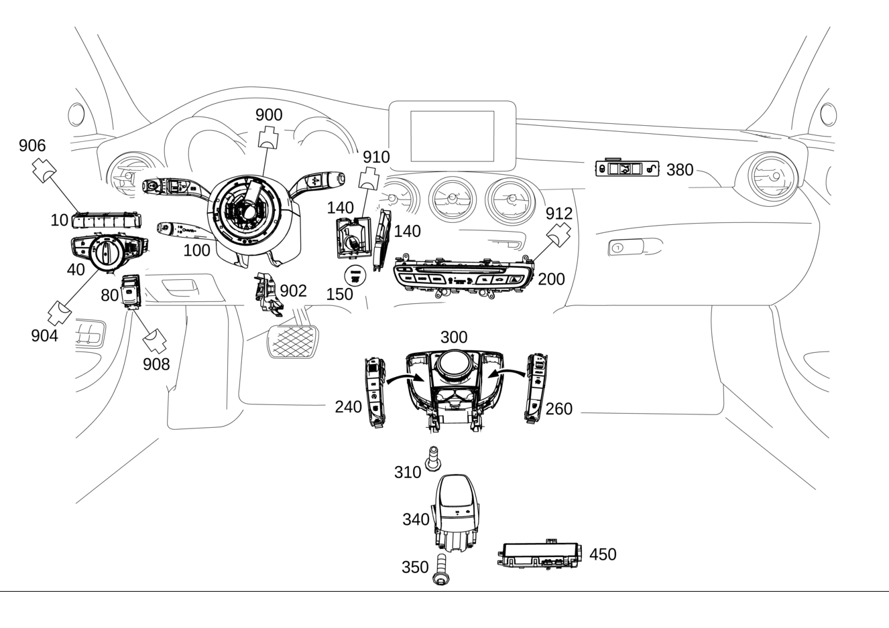

| № | Артикул | Название | Кол. | Примечание | Ограничение |
|---|---|---|---|---|---|
| 10 | A 205 905 02 51 | Блок выключателей (SWITCH BLOCK) | 1 | Системы помощи при движении | (805/806/807/808)+(238/476) |
| 10 | A 205 905 78 09 | Блок выключателей (SWITCH BLOCK) | 1 | Системы помощи при движении | (805/806/807/808)+(238/476) |
| 10 | A 205 905 79 09 | Блок выключателей (SWITCH BLOCK) | 1 | Системы помощи при движении | (805/806/807/808)+(238/476)+266 |
| 10 | A 205 905 35 00 | Блок выключателей (SWITCH BLOCK) | 1 | Системы помощи при движении | (805/806/807/808)+235+489 |
| 10 | A 205 905 80 09 | Блок выключателей (SWITCH BLOCK) | 1 | Системы помощи при движении | (805/806/807/808)+235+489 |
| 10 | A 205 905 04 51 | Блок выключателей (SWITCH BLOCK) | 1 | Системы помощи при движении | (805/806/807/808)+(235/235+489)+(238/476) |
| 10 | A 205 905 81 09 | Блок выключателей | 1 | Системы помощи при движении | (805/806/807/808)+(235/235+489)+(238/476) |
| 10 | A 205 905 82 09 | Блок выключателей (SWITCH BLOCK) | 1 | Системы помощи при движении | (805/806/807/808)+(235/235+489)+(238/476)+266 |
| 10 | A 205 905 78 09 | Блок выключателей (SWITCH BLOCK) | 1 | Системы помощи при движении | (809/800/801/802/803/804)+(233/243) |
| 10 | A 205 905 47 18 | Блок выключателей (SWITCH BLOCK) | 1 | Системы помощи при движении | (809/800/801/802/803/804)+(233/243) |
| 10 | A 205 905 79 09 | Блок выключателей (SWITCH BLOCK) | 1 | Системы помощи при движении | (809/800/801/802/803/804)+(266/233+266) |
| 10 | A 205 905 48 18 | Блок выключателей (SWITCH BLOCK) | 1 | Системы помощи при движении | (809/800/801/802/803/804)+(266/233+266) |
| 10 | A 205 905 80 09 | Блок выключателей (SWITCH BLOCK) | 1 | Системы помощи при движении | (809/800/801/802/803/804)+235+489 |
| 10 | A 205 905 49 18 | Блок выключателей (SWITCH BLOCK) | 1 | Системы помощи при движении | (809/800/801/802/803/804)+235+489 |
| 10 | A 205 905 81 09 | Блок выключателей | 1 | Системы помощи при движении | (809/800/801/802/803/804)+235+489+(233/243) |
| 10 | A 205 905 50 18 | Блок выключателей (SWITCH BLOCK) | 1 | Системы помощи при движении | (809/800/801/802/803/804)+235+489+(233/243) |
| 10 | A 205 905 82 09 | Блок выключателей (SWITCH BLOCK) | 1 | Системы помощи при движении | (809/800/801/802/803/804)+235+489+(266/233+266) |
| 10 | A 205 905 51 18 | Блок выключателей (SWITCH BLOCK) | 1 | Системы помощи при движении | (809/800/801/802/803/804)+235+489+(266/233+266) |
| 10 | A 205 905 86 09 | Блок выключателей (SWITCH BLOCK) | 1 | Системы помощи при движении | (809/800/801/802/803/804)+463 |
| 10 | A 205 905 52 18 | Блок выключателей (SWITCH BLOCK) | 1 | Системы помощи при движении | (809/800/801/802/803/804)+463 |
| 10 | A 205 905 87 09 | Блок выключателей (SWITCH BLOCK) | 1 | Системы помощи при движении | (809/800/801/802/803/804)+463+(233/243) |
| 10 | A 205 905 53 18 | Блок выключателей (SWITCH BLOCK) | 1 | Системы помощи при движении | (809/800/801/802/803/804)+463+(233/243) |
| 10 | A 205 905 88 09 | Блок выключателей (SWITCH BLOCK) | 1 | Системы помощи при движении | (809/800/801/802/803/804)+463+(266/233+266) |
| 10 | A 205 905 54 18 | Блок выключателей (SWITCH BLOCK) | 1 | Системы помощи при движении | (809/800/801/802/803/804)+463+(266/233+266) |
| 10 | A 205 905 89 09 | Блок выключателей (SWITCH BLOCK) | 1 | Системы помощи при движении | (809/800/801/802/803/804)+463+(235+489) |
| 10 | A 205 905 55 18 | Блок выключателей (SWITCH BLOCK) | 1 | Системы помощи при движении | (809/800/801/802/803/804)+463+(235+489) |
| 10 | A 205 905 90 09 | Блок выключателей (SWITCH BLOCK) | 1 | Системы помощи при движении | (809/800/801/802/803/804)+463+235+489+(233/243) |
| 10 | A 205 905 56 18 | Блок выключателей (SWITCH BLOCK) | 1 | Системы помощи при движении | (809/800/801/802/803/804)+463+235+489+(233/243) |
| 10 | A 205 905 91 09 | Блок выключателей (SWITCH BLOCK) | 1 | Системы помощи при движении | (809/800/801/802/803/804)+463+235+489+(266/233+266) |
| 10 | A 205 905 57 18 | Блок выключателей (SWITCH BLOCK) | 1 | Системы помощи при движении | (809/800/801/802/803/804)+463+235+489+(266/233+266) |
| 10 | A 205 905 15 51 | Блок выключателей (SWITCH BLOCK) | 1 | Системы помощи при движении | (805/806/807/808)+501+(235/235+489) |
| 10 | A 205 905 83 09 | Блок выключателей (SWITCH BLOCK) | 1 | Системы помощи при движении | (805/806/807/808)+501+(235/235+489) |
| 10 | A 205 905 16 51 | Блок выключателей (SWITCH BLOCK) | 1 | Системы помощи при движении | (805/806/807/808)+501+(235/235+489)+(238/476) |
| 10 | A 205 905 84 09 | Блок выключателей (SWITCH BLOCK) | 1 | Системы помощи при движении | (805/806/807/808)+501+(235/235+489)+(238/476) |
| 10 | A 205 905 17 51 | Блок выключателей (SWITCH BLOCK) | 1 | Системы помощи при движении | (805/806/807/808)+501+(235/235+489)+(238/476)+266 |
| 10 | A 205 905 85 09 | Блок выключателей (SWITCH BLOCK) | 1 | Системы помощи при движении | (805/806/807/808)+501+(235/235+489)+(238/476)+266 |
| 10 | A 205 905 24 51 | Блок выключателей (SWITCH BLOCK) | 1 | Системы помощи при движении | (805/806/807/808)+463 |
| 10 | A 205 905 86 09 | Блок выключателей (SWITCH BLOCK) | 1 | Системы помощи при движении | (805/806/807/808)+463 |
| 10 | A 205 905 87 09 | Блок выключателей (SWITCH BLOCK) | 1 | Системы помощи при движении | (805/806/807/808)+463+(238/476) |
| 10 | A 205 905 88 09 | Блок выключателей (SWITCH BLOCK) | 1 | Системы помощи при движении | (805/806/807/808)+463+(238/476)+266 |
| 10 | A 205 905 89 09 | Блок выключателей (SWITCH BLOCK) | 1 | Системы помощи при движении | (805/806/807/808)+463+(235/235+489) |
| 10 | A 205 905 90 09 | Блок выключателей (SWITCH BLOCK) | 1 | Системы помощи при движении | (805/806/807/808)+463+(235/235+489)+(238/476) |
| 10 | A 205 905 91 09 | Блок выключателей (SWITCH BLOCK) | 1 | Системы помощи при движении | (805/806/807/808)+463+(235/235+489)+(238/476)+266 |
| 10 | A 205 905 39 51 | Блок выключателей (SWITCH BLOCK) | 1 | Системы помощи при движении | (805/806/807/808)+463+501+(235/235+489) |
| 10 | A 205 905 92 09 | Блок выключателей (SWITCH BLOCK) | 1 | Системы помощи при движении | (805/806/807/808)+463+501+(235/235+489) |
| 10 | A 205 905 40 51 | Блок выключателей (SWITCH BLOCK) | 1 | Системы помощи при движении | (805/806/807/808)+463+501+(235/235+489)+(238/476) |
| 10 | A 205 905 93 09 | Блок выключателей (SWITCH BLOCK) | 1 | Системы помощи при движении | (805/806/807/808)+463+501+(235/235+489)+(238/476) |
| 10 | A 205 905 41 51 | Блок выключателей (SWITCH BLOCK) | 1 | Системы помощи при движении | (805/806/807/808)+463+501+(235/235+489)+(238/476)+266 |
| 10 | A 205 905 94 09 | Блок выключателей (SWITCH BLOCK) | 1 | Системы помощи при движении | (805/806/807/808)+463+501+(235/235+489)+(238/476)+266 |
| 40 | A 205 905 60 00 | Переключатель света (LIGHT SWITCH) | 1 | (805/806)+-(460/494) | |
| 40 | A 205 905 72 07 | Переключатель света | 1 | (805/806/807+-057)+-(460/494) | |
| 40 | A 205 905 19 10 | Переключатель света | 1 | (807+057/808/809)+-(460/494) | |
| 40 | A 205 905 19 10 | Переключатель света | 1 | (807+057/808/809/800/801/802)+-(460/494) | |
| 40 | A 205 905 65 00 | Переключатель света (LIGHT SWITCH) | 1 | (805/806)+(489/631/632/640/641/642)+-(460/494) | |
| 40 | A 205 905 70 07 | Переключатель света (LIGHT SWITCH) | 1 | (805/806/807+-057)+(489/631/632/640/641/642)+-(460/494) | |
| 40 | A 205 905 18 10 | Переключатель света (LIGHT SWITCH) | 1 | (807+057/808/809)+(489/631/632/640/641/642)+-(460/494) | |
| 40 | A 205 905 18 10 | Переключатель света (LIGHT SWITCH) | 1 | (807+057/808/809/800/801/802)+(489/631/632/640/641/642)+-(460/494) | |
| 80 | A 205 905 66 03 | Блок выключателей (SWITCH BLOCK) | 1 | Электронный стояночный тормоз | |
| 80 | A 205 905 15 16 | Блок выключателей (SWITCH BLOCK) | 1 | Электронный стояночный тормоз | |
| 100 | A 205 900 63 12 | Блок управления | 1 | Блок подрулевых переключателей; KOSTAL [672] ДЕТАЛЬ ПОСЛЕ УСТАН.ПРОВЕРИТЬ НА АКТУАЛЬНОСТЬ "ПРОШИВНОГО" ПО [004000] ВНИМАНИЕ! УЧИТЫВАТЬ ПРОИЗВОДИТЕЛЯ СНЯТОЙ ДЕТАЛИ. ЗАМЕНА ТОЛЬКО НА МОДУЛЬ РУЛ.КОЛОНКИ С ПОДРУЛ.ПЕРЕКЛЮЧ. ТОГО ЖЕ ПРОИЗВОДИТЕЛЯ. | 805+-(443/140) |
| 100 | A 205 900 65 12 | Блок управления | 1 | Блок подрулевых переключателей; KOSTAL [672] ДЕТАЛЬ ПОСЛЕ УСТАН.ПРОВЕРИТЬ НА АКТУАЛЬНОСТЬ "ПРОШИВНОГО" ПО [697] ДЕТАЛЬ ПОСТАВЛЯЕТСЯ ТОЛЬКО/ИЛИ ТАКЖЕ КАК ЗАП.ЧАСТЬ [004000] ВНИМАНИЕ! УЧИТЫВАТЬ ПРОИЗВОДИТЕЛЯ СНЯТОЙ ДЕТАЛИ. ЗАМЕНА ТОЛЬКО НА МОДУЛЬ РУЛ.КОЛОНКИ С ПОДРУЛ.ПЕРЕКЛЮЧ. ТОГО ЖЕ ПРОИЗВОДИТЕЛЯ. | 805+(238/476)+-(443/140) |
| 100 | A 205 900 67 12 | Блок управления (CONTROL UNIT) | 1 | Блок подрулевых переключателей; KOSTAL [672] ДЕТАЛЬ ПОСЛЕ УСТАН.ПРОВЕРИТЬ НА АКТУАЛЬНОСТЬ "ПРОШИВНОГО" ПО [004000] ВНИМАНИЕ! УЧИТЫВАТЬ ПРОИЗВОДИТЕЛЯ СНЯТОЙ ДЕТАЛИ. ЗАМЕНА ТОЛЬКО НА МОДУЛЬ РУЛ.КОЛОНКИ С ПОДРУЛ.ПЕРЕКЛЮЧ. ТОГО ЖЕ ПРОИЗВОДИТЕЛЯ. | 805+440+-(443/140) |
| 100 | A 205 900 69 12 | Блок управления | 1 | Блок подрулевых переключателей; KOSTAL [672] ДЕТАЛЬ ПОСЛЕ УСТАН.ПРОВЕРИТЬ НА АКТУАЛЬНОСТЬ "ПРОШИВНОГО" ПО [004000] ВНИМАНИЕ! УЧИТЫВАТЬ ПРОИЗВОДИТЕЛЯ СНЯТОЙ ДЕТАЛИ. ЗАМЕНА ТОЛЬКО НА МОДУЛЬ РУЛ.КОЛОНКИ С ПОДРУЛ.ПЕРЕКЛЮЧ. ТОГО ЖЕ ПРОИЗВОДИТЕЛЯ. | 805+(233/239)+-(443/140) |
| 100 | A 205 900 71 12 | Блок управления | 1 | Блок подрулевых переключателей; KOSTAL [672] ДЕТАЛЬ ПОСЛЕ УСТАН.ПРОВЕРИТЬ НА АКТУАЛЬНОСТЬ "ПРОШИВНОГО" ПО [004000] ВНИМАНИЕ! УЧИТЫВАТЬ ПРОИЗВОДИТЕЛЯ СНЯТОЙ ДЕТАЛИ. ЗАМЕНА ТОЛЬКО НА МОДУЛЬ РУЛ.КОЛОНКИ С ПОДРУЛ.ПЕРЕКЛЮЧ. ТОГО ЖЕ ПРОИЗВОДИТЕЛЯ. | 805+(238/476)+440+-(443/140) |
| 100 | A 205 900 73 12 | Блок управления | 1 | Блок подрулевых переключателей; KOSTAL [672] ДЕТАЛЬ ПОСЛЕ УСТАН.ПРОВЕРИТЬ НА АКТУАЛЬНОСТЬ "ПРОШИВНОГО" ПО [004000] ВНИМАНИЕ! УЧИТЫВАТЬ ПРОИЗВОДИТЕЛЯ СНЯТОЙ ДЕТАЛИ. ЗАМЕНА ТОЛЬКО НА МОДУЛЬ РУЛ.КОЛОНКИ С ПОДРУЛ.ПЕРЕКЛЮЧ. ТОГО ЖЕ ПРОИЗВОДИТЕЛЯ. | 805+(233/239)+(238/476)+-(443/140) |
| 100 | A 205 900 75 12 | Блок управления (CONTROL UNIT) | 1 | Блок подрулевых переключателей; KOSTAL [672] ДЕТАЛЬ ПОСЛЕ УСТАН.ПРОВЕРИТЬ НА АКТУАЛЬНОСТЬ "ПРОШИВНОГО" ПО [004000] ВНИМАНИЕ! УЧИТЫВАТЬ ПРОИЗВОДИТЕЛЯ СНЯТОЙ ДЕТАЛИ. ЗАМЕНА ТОЛЬКО НА МОДУЛЬ РУЛ.КОЛОНКИ С ПОДРУЛ.ПЕРЕКЛЮЧ. ТОГО ЖЕ ПРОИЗВОДИТЕЛЯ. | 805+(421/427)+440+-(443/140) |
| 100 | A 205 900 77 12 | Блок управления | 1 | Блок подрулевых переключателей; KOSTAL [672] ДЕТАЛЬ ПОСЛЕ УСТАН.ПРОВЕРИТЬ НА АКТУАЛЬНОСТЬ "ПРОШИВНОГО" ПО [004000] ВНИМАНИЕ! УЧИТЫВАТЬ ПРОИЗВОДИТЕЛЯ СНЯТОЙ ДЕТАЛИ. ЗАМЕНА ТОЛЬКО НА МОДУЛЬ РУЛ.КОЛОНКИ С ПОДРУЛ.ПЕРЕКЛЮЧ. ТОГО ЖЕ ПРОИЗВОДИТЕЛЯ. | 805+(421/427)+(233/239)+-(443/140) |
| 100 | A 205 900 79 12 | Блок управления (CONTROL UNIT) | 1 | Блок подрулевых переключателей; KOSTAL [672] ДЕТАЛЬ ПОСЛЕ УСТАН.ПРОВЕРИТЬ НА АКТУАЛЬНОСТЬ "ПРОШИВНОГО" ПО [004000] ВНИМАНИЕ! УЧИТЫВАТЬ ПРОИЗВОДИТЕЛЯ СНЯТОЙ ДЕТАЛИ. ЗАМЕНА ТОЛЬКО НА МОДУЛЬ РУЛ.КОЛОНКИ С ПОДРУЛ.ПЕРЕКЛЮЧ. ТОГО ЖЕ ПРОИЗВОДИТЕЛЯ. | 805+(421/427)+(238/476)+440+-(443/140) |
| 100 | A 205 900 81 12 | Блок управления (CONTROL UNIT) | 1 | Блок подрулевых переключателей; KOSTAL [672] ДЕТАЛЬ ПОСЛЕ УСТАН.ПРОВЕРИТЬ НА АКТУАЛЬНОСТЬ "ПРОШИВНОГО" ПО [004000] ВНИМАНИЕ! УЧИТЫВАТЬ ПРОИЗВОДИТЕЛЯ СНЯТОЙ ДЕТАЛИ. ЗАМЕНА ТОЛЬКО НА МОДУЛЬ РУЛ.КОЛОНКИ С ПОДРУЛ.ПЕРЕКЛЮЧ. ТОГО ЖЕ ПРОИЗВОДИТЕЛЯ. | 805+(421/427)+(233/239)+(238/476)+-(443/140) |
| 100 | A 205 900 83 12 | Блок управления (CONTROL UNIT) | 1 | Блок подрулевых переключателей; KOSTAL [672] ДЕТАЛЬ ПОСЛЕ УСТАН.ПРОВЕРИТЬ НА АКТУАЛЬНОСТЬ "ПРОШИВНОГО" ПО [004000] ВНИМАНИЕ! УЧИТЫВАТЬ ПРОИЗВОДИТЕЛЯ СНЯТОЙ ДЕТАЛИ. ЗАМЕНА ТОЛЬКО НА МОДУЛЬ РУЛ.КОЛОНКИ С ПОДРУЛ.ПЕРЕКЛЮЧ. ТОГО ЖЕ ПРОИЗВОДИТЕЛЯ. | 805+(421/427)+275+440+-(443/140) |
| 100 | A 205 900 85 12 | Блок управления (CONTROL UNIT) | 1 | Блок подрулевых переключателей; KOSTAL [672] ДЕТАЛЬ ПОСЛЕ УСТАН.ПРОВЕРИТЬ НА АКТУАЛЬНОСТЬ "ПРОШИВНОГО" ПО [004000] ВНИМАНИЕ! УЧИТЫВАТЬ ПРОИЗВОДИТЕЛЯ СНЯТОЙ ДЕТАЛИ. ЗАМЕНА ТОЛЬКО НА МОДУЛЬ РУЛ.КОЛОНКИ С ПОДРУЛ.ПЕРЕКЛЮЧ. ТОГО ЖЕ ПРОИЗВОДИТЕЛЯ. | 805+(421/427)+(233/239)+275+-(443/140) |
| 100 | A 205 900 87 12 | Блок управления (CONTROL UNIT) | 1 | Блок подрулевых переключателей; KOSTAL [672] ДЕТАЛЬ ПОСЛЕ УСТАН.ПРОВЕРИТЬ НА АКТУАЛЬНОСТЬ "ПРОШИВНОГО" ПО [004000] ВНИМАНИЕ! УЧИТЫВАТЬ ПРОИЗВОДИТЕЛЯ СНЯТОЙ ДЕТАЛИ. ЗАМЕНА ТОЛЬКО НА МОДУЛЬ РУЛ.КОЛОНКИ С ПОДРУЛ.ПЕРЕКЛЮЧ. ТОГО ЖЕ ПРОИЗВОДИТЕЛЯ. | 805+(421/427)+(238/476)+275+440+-(443/140) |
| 100 | A 205 900 89 12 | Блок управления (CONTROL UNIT) | 1 | Блок подрулевых переключателей; KOSTAL [672] ДЕТАЛЬ ПОСЛЕ УСТАН.ПРОВЕРИТЬ НА АКТУАЛЬНОСТЬ "ПРОШИВНОГО" ПО [004000] ВНИМАНИЕ! УЧИТЫВАТЬ ПРОИЗВОДИТЕЛЯ СНЯТОЙ ДЕТАЛИ. ЗАМЕНА ТОЛЬКО НА МОДУЛЬ РУЛ.КОЛОНКИ С ПОДРУЛ.ПЕРЕКЛЮЧ. ТОГО ЖЕ ПРОИЗВОДИТЕЛЯ. | 805+(421/427)+(233/239)+(238/476)+275+-(443/140) |
| 100 | A 205 900 63 12 | Блок управления | 1 | Блок подрулевых переключателей; KOSTAL [672] ДЕТАЛЬ ПОСЛЕ УСТАН.ПРОВЕРИТЬ НА АКТУАЛЬНОСТЬ "ПРОШИВНОГО" ПО [004000] ВНИМАНИЕ! УЧИТЫВАТЬ ПРОИЗВОДИТЕЛЯ СНЯТОЙ ДЕТАЛИ. ЗАМЕНА ТОЛЬКО НА МОДУЛЬ РУЛ.КОЛОНКИ С ПОДРУЛ.ПЕРЕКЛЮЧ. ТОГО ЖЕ ПРОИЗВОДИТЕЛЯ. | 805+055+140+-443 |
| 100 | A 205 900 65 12 | Блок управления | 1 | Блок подрулевых переключателей; KOSTAL [672] ДЕТАЛЬ ПОСЛЕ УСТАН.ПРОВЕРИТЬ НА АКТУАЛЬНОСТЬ "ПРОШИВНОГО" ПО [697] ДЕТАЛЬ ПОСТАВЛЯЕТСЯ ТОЛЬКО/ИЛИ ТАКЖЕ КАК ЗАП.ЧАСТЬ [004000] ВНИМАНИЕ! УЧИТЫВАТЬ ПРОИЗВОДИТЕЛЯ СНЯТОЙ ДЕТАЛИ. ЗАМЕНА ТОЛЬКО НА МОДУЛЬ РУЛ.КОЛОНКИ С ПОДРУЛ.ПЕРЕКЛЮЧ. ТОГО ЖЕ ПРОИЗВОДИТЕЛЯ. | 805+055+140+(238/476)+-443 |
| 100 | A 205 900 67 12 | Блок управления (CONTROL UNIT) | 1 | Блок подрулевых переключателей; KOSTAL [672] ДЕТАЛЬ ПОСЛЕ УСТАН.ПРОВЕРИТЬ НА АКТУАЛЬНОСТЬ "ПРОШИВНОГО" ПО [004000] ВНИМАНИЕ! УЧИТЫВАТЬ ПРОИЗВОДИТЕЛЯ СНЯТОЙ ДЕТАЛИ. ЗАМЕНА ТОЛЬКО НА МОДУЛЬ РУЛ.КОЛОНКИ С ПОДРУЛ.ПЕРЕКЛЮЧ. ТОГО ЖЕ ПРОИЗВОДИТЕЛЯ. | 805+055+140+440+-443 |
| 100 | A 205 900 69 12 | Блок управления | 1 | Блок подрулевых переключателей; KOSTAL [672] ДЕТАЛЬ ПОСЛЕ УСТАН.ПРОВЕРИТЬ НА АКТУАЛЬНОСТЬ "ПРОШИВНОГО" ПО [004000] ВНИМАНИЕ! УЧИТЫВАТЬ ПРОИЗВОДИТЕЛЯ СНЯТОЙ ДЕТАЛИ. ЗАМЕНА ТОЛЬКО НА МОДУЛЬ РУЛ.КОЛОНКИ С ПОДРУЛ.ПЕРЕКЛЮЧ. ТОГО ЖЕ ПРОИЗВОДИТЕЛЯ. | 805+055+140+(233/239)+-443 |
| 100 | A 205 900 71 12 | Блок управления | 1 | Блок подрулевых переключателей; KOSTAL [672] ДЕТАЛЬ ПОСЛЕ УСТАН.ПРОВЕРИТЬ НА АКТУАЛЬНОСТЬ "ПРОШИВНОГО" ПО [004000] ВНИМАНИЕ! УЧИТЫВАТЬ ПРОИЗВОДИТЕЛЯ СНЯТОЙ ДЕТАЛИ. ЗАМЕНА ТОЛЬКО НА МОДУЛЬ РУЛ.КОЛОНКИ С ПОДРУЛ.ПЕРЕКЛЮЧ. ТОГО ЖЕ ПРОИЗВОДИТЕЛЯ. | 805+055+140+(238/476)+440+-443 |
| 100 | A 205 900 73 12 | Блок управления | 1 | Блок подрулевых переключателей; KOSTAL [672] ДЕТАЛЬ ПОСЛЕ УСТАН.ПРОВЕРИТЬ НА АКТУАЛЬНОСТЬ "ПРОШИВНОГО" ПО [004000] ВНИМАНИЕ! УЧИТЫВАТЬ ПРОИЗВОДИТЕЛЯ СНЯТОЙ ДЕТАЛИ. ЗАМЕНА ТОЛЬКО НА МОДУЛЬ РУЛ.КОЛОНКИ С ПОДРУЛ.ПЕРЕКЛЮЧ. ТОГО ЖЕ ПРОИЗВОДИТЕЛЯ. | 805+055+140+(233/239)+(238/476)+-443 |
| 100 | A 205 900 75 12 | Блок управления (CONTROL UNIT) | 1 | Блок подрулевых переключателей; KOSTAL [672] ДЕТАЛЬ ПОСЛЕ УСТАН.ПРОВЕРИТЬ НА АКТУАЛЬНОСТЬ "ПРОШИВНОГО" ПО [004000] ВНИМАНИЕ! УЧИТЫВАТЬ ПРОИЗВОДИТЕЛЯ СНЯТОЙ ДЕТАЛИ. ЗАМЕНА ТОЛЬКО НА МОДУЛЬ РУЛ.КОЛОНКИ С ПОДРУЛ.ПЕРЕКЛЮЧ. ТОГО ЖЕ ПРОИЗВОДИТЕЛЯ. | 805+055+140+(421/427)+440+-443 |
| 100 | A 205 900 79 12 | Блок управления (CONTROL UNIT) | 1 | Блок подрулевых переключателей; KOSTAL [672] ДЕТАЛЬ ПОСЛЕ УСТАН.ПРОВЕРИТЬ НА АКТУАЛЬНОСТЬ "ПРОШИВНОГО" ПО [004000] ВНИМАНИЕ! УЧИТЫВАТЬ ПРОИЗВОДИТЕЛЯ СНЯТОЙ ДЕТАЛИ. ЗАМЕНА ТОЛЬКО НА МОДУЛЬ РУЛ.КОЛОНКИ С ПОДРУЛ.ПЕРЕКЛЮЧ. ТОГО ЖЕ ПРОИЗВОДИТЕЛЯ. | 805+055+140+(421/427)+(238/476)+440+-443 |
| 100 | A 205 900 81 12 | Блок управления (CONTROL UNIT) | 1 | Блок подрулевых переключателей; KOSTAL [672] ДЕТАЛЬ ПОСЛЕ УСТАН.ПРОВЕРИТЬ НА АКТУАЛЬНОСТЬ "ПРОШИВНОГО" ПО [004000] ВНИМАНИЕ! УЧИТЫВАТЬ ПРОИЗВОДИТЕЛЯ СНЯТОЙ ДЕТАЛИ. ЗАМЕНА ТОЛЬКО НА МОДУЛЬ РУЛ.КОЛОНКИ С ПОДРУЛ.ПЕРЕКЛЮЧ. ТОГО ЖЕ ПРОИЗВОДИТЕЛЯ. | 805+055+140+(421/427)+(233/239)+(238/476)+-443 |
| 100 | A 205 900 83 12 | Блок управления (CONTROL UNIT) | 1 | Блок подрулевых переключателей; KOSTAL [672] ДЕТАЛЬ ПОСЛЕ УСТАН.ПРОВЕРИТЬ НА АКТУАЛЬНОСТЬ "ПРОШИВНОГО" ПО [004000] ВНИМАНИЕ! УЧИТЫВАТЬ ПРОИЗВОДИТЕЛЯ СНЯТОЙ ДЕТАЛИ. ЗАМЕНА ТОЛЬКО НА МОДУЛЬ РУЛ.КОЛОНКИ С ПОДРУЛ.ПЕРЕКЛЮЧ. ТОГО ЖЕ ПРОИЗВОДИТЕЛЯ. | 805+055+140+(421/427)+275+440+-443 |
| 100 | A 205 900 87 12 | Блок управления (CONTROL UNIT) | 1 | Блок подрулевых переключателей; KOSTAL [672] ДЕТАЛЬ ПОСЛЕ УСТАН.ПРОВЕРИТЬ НА АКТУАЛЬНОСТЬ "ПРОШИВНОГО" ПО [004000] ВНИМАНИЕ! УЧИТЫВАТЬ ПРОИЗВОДИТЕЛЯ СНЯТОЙ ДЕТАЛИ. ЗАМЕНА ТОЛЬКО НА МОДУЛЬ РУЛ.КОЛОНКИ С ПОДРУЛ.ПЕРЕКЛЮЧ. ТОГО ЖЕ ПРОИЗВОДИТЕЛЯ. | 805+055+140+(421/427)+(238/476)+275+440+-443 |
| 100 | A 205 900 89 12 | Блок управления (CONTROL UNIT) | 1 | Блок подрулевых переключателей; KOSTAL [672] ДЕТАЛЬ ПОСЛЕ УСТАН.ПРОВЕРИТЬ НА АКТУАЛЬНОСТЬ "ПРОШИВНОГО" ПО [004000] ВНИМАНИЕ! УЧИТЫВАТЬ ПРОИЗВОДИТЕЛЯ СНЯТОЙ ДЕТАЛИ. ЗАМЕНА ТОЛЬКО НА МОДУЛЬ РУЛ.КОЛОНКИ С ПОДРУЛ.ПЕРЕКЛЮЧ. ТОГО ЖЕ ПРОИЗВОДИТЕЛЯ. | 805+055+140+(421/427)+(233/239)+(238/476)+275+-443 |
| 100 | A 205 900 75 12 | Блок управления (CONTROL UNIT) | 1 | Блок подрулевых переключателей; KOSTAL [672] ДЕТАЛЬ ПОСЛЕ УСТАН.ПРОВЕРИТЬ НА АКТУАЛЬНОСТЬ "ПРОШИВНОГО" ПО [004000] ВНИМАНИЕ! УЧИТЫВАТЬ ПРОИЗВОДИТЕЛЯ СНЯТОЙ ДЕТАЛИ. ЗАМЕНА ТОЛЬКО НА МОДУЛЬ РУЛ.КОЛОНКИ С ПОДРУЛ.ПЕРЕКЛЮЧ. ТОГО ЖЕ ПРОИЗВОДИТЕЛЯ. | 806+(421/427)+440+-(443/056) |
| 100 | A 205 900 83 12 | Блок управления (CONTROL UNIT) | 1 | Блок подрулевых переключателей; KOSTAL [672] ДЕТАЛЬ ПОСЛЕ УСТАН.ПРОВЕРИТЬ НА АКТУАЛЬНОСТЬ "ПРОШИВНОГО" ПО [004000] ВНИМАНИЕ! УЧИТЫВАТЬ ПРОИЗВОДИТЕЛЯ СНЯТОЙ ДЕТАЛИ. ЗАМЕНА ТОЛЬКО НА МОДУЛЬ РУЛ.КОЛОНКИ С ПОДРУЛ.ПЕРЕКЛЮЧ. ТОГО ЖЕ ПРОИЗВОДИТЕЛЯ. | 806+(421/427)+275+440+-(443/056) |
| 100 | A 205 900 87 12 | Блок управления (CONTROL UNIT) | 1 | Блок подрулевых переключателей; KOSTAL [672] ДЕТАЛЬ ПОСЛЕ УСТАН.ПРОВЕРИТЬ НА АКТУАЛЬНОСТЬ "ПРОШИВНОГО" ПО [004000] ВНИМАНИЕ! УЧИТЫВАТЬ ПРОИЗВОДИТЕЛЯ СНЯТОЙ ДЕТАЛИ. ЗАМЕНА ТОЛЬКО НА МОДУЛЬ РУЛ.КОЛОНКИ С ПОДРУЛ.ПЕРЕКЛЮЧ. ТОГО ЖЕ ПРОИЗВОДИТЕЛЯ. | 806+(421/427)+(238/476)+275+440+-(443/056) |
| 100 | A 205 900 89 12 | Блок управления (CONTROL UNIT) | 1 | Блок подрулевых переключателей; KOSTAL [672] ДЕТАЛЬ ПОСЛЕ УСТАН.ПРОВЕРИТЬ НА АКТУАЛЬНОСТЬ "ПРОШИВНОГО" ПО [004000] ВНИМАНИЕ! УЧИТЫВАТЬ ПРОИЗВОДИТЕЛЯ СНЯТОЙ ДЕТАЛИ. ЗАМЕНА ТОЛЬКО НА МОДУЛЬ РУЛ.КОЛОНКИ С ПОДРУЛ.ПЕРЕКЛЮЧ. ТОГО ЖЕ ПРОИЗВОДИТЕЛЯ. | 806+(421/427)+(233/239)+(238/476)+275+-(443/056) |
| 100 | A 205 900 63 12 | Блок управления | 1 | Блок подрулевых переключателей; KOSTAL [672] ДЕТАЛЬ ПОСЛЕ УСТАН.ПРОВЕРИТЬ НА АКТУАЛЬНОСТЬ "ПРОШИВНОГО" ПО [004000] ВНИМАНИЕ! УЧИТЫВАТЬ ПРОИЗВОДИТЕЛЯ СНЯТОЙ ДЕТАЛИ. ЗАМЕНА ТОЛЬКО НА МОДУЛЬ РУЛ.КОЛОНКИ С ПОДРУЛ.ПЕРЕКЛЮЧ. ТОГО ЖЕ ПРОИЗВОДИТЕЛЯ. | 806+056+-443 |
| 100 | A 205 900 50 19 | Блок управления (CONTROL UNIT) | 1 | Блок подрулевых переключателей; VALEO [672] ДЕТАЛЬ ПОСЛЕ УСТАН.ПРОВЕРИТЬ НА АКТУАЛЬНОСТЬ "ПРОШИВНОГО" ПО [004000] ВНИМАНИЕ! УЧИТЫВАТЬ ПРОИЗВОДИТЕЛЯ СНЯТОЙ ДЕТАЛИ. ЗАМЕНА ТОЛЬКО НА МОДУЛЬ РУЛ.КОЛОНКИ С ПОДРУЛ.ПЕРЕКЛЮЧ. ТОГО ЖЕ ПРОИЗВОДИТЕЛЯ. | 806+056+-443 |
| 100 | A 205 900 65 12 | Блок управления | 1 | Блок подрулевых переключателей; KOSTAL [672] ДЕТАЛЬ ПОСЛЕ УСТАН.ПРОВЕРИТЬ НА АКТУАЛЬНОСТЬ "ПРОШИВНОГО" ПО [697] ДЕТАЛЬ ПОСТАВЛЯЕТСЯ ТОЛЬКО/ИЛИ ТАКЖЕ КАК ЗАП.ЧАСТЬ [004000] ВНИМАНИЕ! УЧИТЫВАТЬ ПРОИЗВОДИТЕЛЯ СНЯТОЙ ДЕТАЛИ. ЗАМЕНА ТОЛЬКО НА МОДУЛЬ РУЛ.КОЛОНКИ С ПОДРУЛ.ПЕРЕКЛЮЧ. ТОГО ЖЕ ПРОИЗВОДИТЕЛЯ. | 806+056+(238/476)+-443 |
| 100 | A 205 900 52 19 | Блок управления (CONTROL UNIT) | 1 | Блок подрулевых переключателей; VALEO [672] ДЕТАЛЬ ПОСЛЕ УСТАН.ПРОВЕРИТЬ НА АКТУАЛЬНОСТЬ "ПРОШИВНОГО" ПО [004000] ВНИМАНИЕ! УЧИТЫВАТЬ ПРОИЗВОДИТЕЛЯ СНЯТОЙ ДЕТАЛИ. ЗАМЕНА ТОЛЬКО НА МОДУЛЬ РУЛ.КОЛОНКИ С ПОДРУЛ.ПЕРЕКЛЮЧ. ТОГО ЖЕ ПРОИЗВОДИТЕЛЯ. | 806+056+(238/476)+-443 |
| 100 | A 205 900 67 12 | Блок управления (CONTROL UNIT) | 1 | Блок подрулевых переключателей; KOSTAL [672] ДЕТАЛЬ ПОСЛЕ УСТАН.ПРОВЕРИТЬ НА АКТУАЛЬНОСТЬ "ПРОШИВНОГО" ПО [004000] ВНИМАНИЕ! УЧИТЫВАТЬ ПРОИЗВОДИТЕЛЯ СНЯТОЙ ДЕТАЛИ. ЗАМЕНА ТОЛЬКО НА МОДУЛЬ РУЛ.КОЛОНКИ С ПОДРУЛ.ПЕРЕКЛЮЧ. ТОГО ЖЕ ПРОИЗВОДИТЕЛЯ. | 806+056+440+-443 |
| 100 | A 205 900 54 19 | Блок управления (CONTROL UNIT) | 1 | Блок подрулевых переключателей; VALEO [672] ДЕТАЛЬ ПОСЛЕ УСТАН.ПРОВЕРИТЬ НА АКТУАЛЬНОСТЬ "ПРОШИВНОГО" ПО [004000] ВНИМАНИЕ! УЧИТЫВАТЬ ПРОИЗВОДИТЕЛЯ СНЯТОЙ ДЕТАЛИ. ЗАМЕНА ТОЛЬКО НА МОДУЛЬ РУЛ.КОЛОНКИ С ПОДРУЛ.ПЕРЕКЛЮЧ. ТОГО ЖЕ ПРОИЗВОДИТЕЛЯ. | 806+056+440+-443 |
| 100 | A 205 900 69 12 | Блок управления | 1 | Блок подрулевых переключателей; KOSTAL [672] ДЕТАЛЬ ПОСЛЕ УСТАН.ПРОВЕРИТЬ НА АКТУАЛЬНОСТЬ "ПРОШИВНОГО" ПО [004000] ВНИМАНИЕ! УЧИТЫВАТЬ ПРОИЗВОДИТЕЛЯ СНЯТОЙ ДЕТАЛИ. ЗАМЕНА ТОЛЬКО НА МОДУЛЬ РУЛ.КОЛОНКИ С ПОДРУЛ.ПЕРЕКЛЮЧ. ТОГО ЖЕ ПРОИЗВОДИТЕЛЯ. | 806+056+(233/239)+-443 |
| 100 | A 205 900 56 19 | Блок управления (CONTROL UNIT) | 1 | Блок подрулевых переключателей; VALEO [672] ДЕТАЛЬ ПОСЛЕ УСТАН.ПРОВЕРИТЬ НА АКТУАЛЬНОСТЬ "ПРОШИВНОГО" ПО [004000] ВНИМАНИЕ! УЧИТЫВАТЬ ПРОИЗВОДИТЕЛЯ СНЯТОЙ ДЕТАЛИ. ЗАМЕНА ТОЛЬКО НА МОДУЛЬ РУЛ.КОЛОНКИ С ПОДРУЛ.ПЕРЕКЛЮЧ. ТОГО ЖЕ ПРОИЗВОДИТЕЛЯ. | 806+056+(233/239)+-443 |
| 100 | A 205 900 71 12 | Блок управления | 1 | Блок подрулевых переключателей; KOSTAL [672] ДЕТАЛЬ ПОСЛЕ УСТАН.ПРОВЕРИТЬ НА АКТУАЛЬНОСТЬ "ПРОШИВНОГО" ПО [004000] ВНИМАНИЕ! УЧИТЫВАТЬ ПРОИЗВОДИТЕЛЯ СНЯТОЙ ДЕТАЛИ. ЗАМЕНА ТОЛЬКО НА МОДУЛЬ РУЛ.КОЛОНКИ С ПОДРУЛ.ПЕРЕКЛЮЧ. ТОГО ЖЕ ПРОИЗВОДИТЕЛЯ. | 806+056+(238/476)+440+-443 |
| 100 | A 205 900 58 19 | Блок управления (CONTROL UNIT) | 1 | Блок подрулевых переключателей; VALEO [672] ДЕТАЛЬ ПОСЛЕ УСТАН.ПРОВЕРИТЬ НА АКТУАЛЬНОСТЬ "ПРОШИВНОГО" ПО [004000] ВНИМАНИЕ! УЧИТЫВАТЬ ПРОИЗВОДИТЕЛЯ СНЯТОЙ ДЕТАЛИ. ЗАМЕНА ТОЛЬКО НА МОДУЛЬ РУЛ.КОЛОНКИ С ПОДРУЛ.ПЕРЕКЛЮЧ. ТОГО ЖЕ ПРОИЗВОДИТЕЛЯ. | 806+056+(238/476)+440+-443 |
| 100 | A 205 900 73 12 | Блок управления | 1 | Блок подрулевых переключателей; KOSTAL [672] ДЕТАЛЬ ПОСЛЕ УСТАН.ПРОВЕРИТЬ НА АКТУАЛЬНОСТЬ "ПРОШИВНОГО" ПО [004000] ВНИМАНИЕ! УЧИТЫВАТЬ ПРОИЗВОДИТЕЛЯ СНЯТОЙ ДЕТАЛИ. ЗАМЕНА ТОЛЬКО НА МОДУЛЬ РУЛ.КОЛОНКИ С ПОДРУЛ.ПЕРЕКЛЮЧ. ТОГО ЖЕ ПРОИЗВОДИТЕЛЯ. | 806+056+(233/239)+(238/476)+-443 |
| 100 | A 205 900 60 19 | Блок управления (CONTROL UNIT) | 1 | Блок подрулевых переключателей; VALEO [672] ДЕТАЛЬ ПОСЛЕ УСТАН.ПРОВЕРИТЬ НА АКТУАЛЬНОСТЬ "ПРОШИВНОГО" ПО [004000] ВНИМАНИЕ! УЧИТЫВАТЬ ПРОИЗВОДИТЕЛЯ СНЯТОЙ ДЕТАЛИ. ЗАМЕНА ТОЛЬКО НА МОДУЛЬ РУЛ.КОЛОНКИ С ПОДРУЛ.ПЕРЕКЛЮЧ. ТОГО ЖЕ ПРОИЗВОДИТЕЛЯ. | 806+056+(233/239)+(238/476)+-443 |
| 100 | A 205 900 75 12 | Блок управления (CONTROL UNIT) | 1 | Блок подрулевых переключателей; KOSTAL [672] ДЕТАЛЬ ПОСЛЕ УСТАН.ПРОВЕРИТЬ НА АКТУАЛЬНОСТЬ "ПРОШИВНОГО" ПО [004000] ВНИМАНИЕ! УЧИТЫВАТЬ ПРОИЗВОДИТЕЛЯ СНЯТОЙ ДЕТАЛИ. ЗАМЕНА ТОЛЬКО НА МОДУЛЬ РУЛ.КОЛОНКИ С ПОДРУЛ.ПЕРЕКЛЮЧ. ТОГО ЖЕ ПРОИЗВОДИТЕЛЯ. | 806+056+(421/427)+440+-443 |
| 100 | A 205 900 62 19 | Блок управления (CONTROL UNIT) | 1 | Блок подрулевых переключателей; VALEO [672] ДЕТАЛЬ ПОСЛЕ УСТАН.ПРОВЕРИТЬ НА АКТУАЛЬНОСТЬ "ПРОШИВНОГО" ПО [004000] ВНИМАНИЕ! УЧИТЫВАТЬ ПРОИЗВОДИТЕЛЯ СНЯТОЙ ДЕТАЛИ. ЗАМЕНА ТОЛЬКО НА МОДУЛЬ РУЛ.КОЛОНКИ С ПОДРУЛ.ПЕРЕКЛЮЧ. ТОГО ЖЕ ПРОИЗВОДИТЕЛЯ. | 806+056+(421/427)+440+-443 |
| 100 | A 205 900 77 12 | Блок управления | 1 | Блок подрулевых переключателей; KOSTAL [672] ДЕТАЛЬ ПОСЛЕ УСТАН.ПРОВЕРИТЬ НА АКТУАЛЬНОСТЬ "ПРОШИВНОГО" ПО [004000] ВНИМАНИЕ! УЧИТЫВАТЬ ПРОИЗВОДИТЕЛЯ СНЯТОЙ ДЕТАЛИ. ЗАМЕНА ТОЛЬКО НА МОДУЛЬ РУЛ.КОЛОНКИ С ПОДРУЛ.ПЕРЕКЛЮЧ. ТОГО ЖЕ ПРОИЗВОДИТЕЛЯ. | 806+056+(421/427)+(233/239)+-443 |
| 100 | A 205 900 64 19 | Блок управления (CONTROL UNIT) | 1 | Блок подрулевых переключателей; VALEO [672] ДЕТАЛЬ ПОСЛЕ УСТАН.ПРОВЕРИТЬ НА АКТУАЛЬНОСТЬ "ПРОШИВНОГО" ПО [004000] ВНИМАНИЕ! УЧИТЫВАТЬ ПРОИЗВОДИТЕЛЯ СНЯТОЙ ДЕТАЛИ. ЗАМЕНА ТОЛЬКО НА МОДУЛЬ РУЛ.КОЛОНКИ С ПОДРУЛ.ПЕРЕКЛЮЧ. ТОГО ЖЕ ПРОИЗВОДИТЕЛЯ. | 806+056+(421/427)+(233/239)+-443 |
| 100 | A 205 900 79 12 | Блок управления (CONTROL UNIT) | 1 | Блок подрулевых переключателей; KOSTAL [672] ДЕТАЛЬ ПОСЛЕ УСТАН.ПРОВЕРИТЬ НА АКТУАЛЬНОСТЬ "ПРОШИВНОГО" ПО [004000] ВНИМАНИЕ! УЧИТЫВАТЬ ПРОИЗВОДИТЕЛЯ СНЯТОЙ ДЕТАЛИ. ЗАМЕНА ТОЛЬКО НА МОДУЛЬ РУЛ.КОЛОНКИ С ПОДРУЛ.ПЕРЕКЛЮЧ. ТОГО ЖЕ ПРОИЗВОДИТЕЛЯ. | 806+056+(421/427)+(238/476)+440+-443 |
| 100 | A 205 900 66 19 | Блок управления (CONTROL UNIT) | 1 | Блок подрулевых переключателей; VALEO [672] ДЕТАЛЬ ПОСЛЕ УСТАН.ПРОВЕРИТЬ НА АКТУАЛЬНОСТЬ "ПРОШИВНОГО" ПО [004000] ВНИМАНИЕ! УЧИТЫВАТЬ ПРОИЗВОДИТЕЛЯ СНЯТОЙ ДЕТАЛИ. ЗАМЕНА ТОЛЬКО НА МОДУЛЬ РУЛ.КОЛОНКИ С ПОДРУЛ.ПЕРЕКЛЮЧ. ТОГО ЖЕ ПРОИЗВОДИТЕЛЯ. | 806+056+(421/427)+(238/476)+440+-443 |
| 100 | A 205 900 81 12 | Блок управления (CONTROL UNIT) | 1 | Блок подрулевых переключателей; KOSTAL [672] ДЕТАЛЬ ПОСЛЕ УСТАН.ПРОВЕРИТЬ НА АКТУАЛЬНОСТЬ "ПРОШИВНОГО" ПО [004000] ВНИМАНИЕ! УЧИТЫВАТЬ ПРОИЗВОДИТЕЛЯ СНЯТОЙ ДЕТАЛИ. ЗАМЕНА ТОЛЬКО НА МОДУЛЬ РУЛ.КОЛОНКИ С ПОДРУЛ.ПЕРЕКЛЮЧ. ТОГО ЖЕ ПРОИЗВОДИТЕЛЯ. | 806+056+(421/427)+(233/239)+(238/476)+-443 |
| 100 | A 205 900 68 19 | Блок управления (CONTROL UNIT) | 1 | Блок подрулевых переключателей; VALEO [672] ДЕТАЛЬ ПОСЛЕ УСТАН.ПРОВЕРИТЬ НА АКТУАЛЬНОСТЬ "ПРОШИВНОГО" ПО [004000] ВНИМАНИЕ! УЧИТЫВАТЬ ПРОИЗВОДИТЕЛЯ СНЯТОЙ ДЕТАЛИ. ЗАМЕНА ТОЛЬКО НА МОДУЛЬ РУЛ.КОЛОНКИ С ПОДРУЛ.ПЕРЕКЛЮЧ. ТОГО ЖЕ ПРОИЗВОДИТЕЛЯ. | 806+056+(421/427)+(233/239)+(238/476)+-443 |
| 100 | A 205 900 83 12 | Блок управления (CONTROL UNIT) | 1 | Блок подрулевых переключателей; KOSTAL [672] ДЕТАЛЬ ПОСЛЕ УСТАН.ПРОВЕРИТЬ НА АКТУАЛЬНОСТЬ "ПРОШИВНОГО" ПО [004000] ВНИМАНИЕ! УЧИТЫВАТЬ ПРОИЗВОДИТЕЛЯ СНЯТОЙ ДЕТАЛИ. ЗАМЕНА ТОЛЬКО НА МОДУЛЬ РУЛ.КОЛОНКИ С ПОДРУЛ.ПЕРЕКЛЮЧ. ТОГО ЖЕ ПРОИЗВОДИТЕЛЯ. | 806+056+(421/427)+275+440+-443 |
| 100 | A 205 900 70 19 | Блок управления (CONTROL UNIT) | 1 | Блок подрулевых переключателей; VALEO [672] ДЕТАЛЬ ПОСЛЕ УСТАН.ПРОВЕРИТЬ НА АКТУАЛЬНОСТЬ "ПРОШИВНОГО" ПО [004000] ВНИМАНИЕ! УЧИТЫВАТЬ ПРОИЗВОДИТЕЛЯ СНЯТОЙ ДЕТАЛИ. ЗАМЕНА ТОЛЬКО НА МОДУЛЬ РУЛ.КОЛОНКИ С ПОДРУЛ.ПЕРЕКЛЮЧ. ТОГО ЖЕ ПРОИЗВОДИТЕЛЯ. | 806+056+(421/427)+275+440+-443 |
| 100 | A 205 900 85 12 | Блок управления (CONTROL UNIT) | 1 | Блок подрулевых переключателей; KOSTAL [672] ДЕТАЛЬ ПОСЛЕ УСТАН.ПРОВЕРИТЬ НА АКТУАЛЬНОСТЬ "ПРОШИВНОГО" ПО [004000] ВНИМАНИЕ! УЧИТЫВАТЬ ПРОИЗВОДИТЕЛЯ СНЯТОЙ ДЕТАЛИ. ЗАМЕНА ТОЛЬКО НА МОДУЛЬ РУЛ.КОЛОНКИ С ПОДРУЛ.ПЕРЕКЛЮЧ. ТОГО ЖЕ ПРОИЗВОДИТЕЛЯ. | 806+056+(421/427)+(233/239)+275+-443 |
| 100 | A 205 900 72 19 | Блок управления (CONTROL UNIT) | 1 | Блок подрулевых переключателей; VALEO [672] ДЕТАЛЬ ПОСЛЕ УСТАН.ПРОВЕРИТЬ НА АКТУАЛЬНОСТЬ "ПРОШИВНОГО" ПО [004000] ВНИМАНИЕ! УЧИТЫВАТЬ ПРОИЗВОДИТЕЛЯ СНЯТОЙ ДЕТАЛИ. ЗАМЕНА ТОЛЬКО НА МОДУЛЬ РУЛ.КОЛОНКИ С ПОДРУЛ.ПЕРЕКЛЮЧ. ТОГО ЖЕ ПРОИЗВОДИТЕЛЯ. | 806+056+(421/427)+(233/239)+275+-443 |
| 100 | A 205 900 87 12 | Блок управления (CONTROL UNIT) | 1 | Блок подрулевых переключателей; KOSTAL [672] ДЕТАЛЬ ПОСЛЕ УСТАН.ПРОВЕРИТЬ НА АКТУАЛЬНОСТЬ "ПРОШИВНОГО" ПО [004000] ВНИМАНИЕ! УЧИТЫВАТЬ ПРОИЗВОДИТЕЛЯ СНЯТОЙ ДЕТАЛИ. ЗАМЕНА ТОЛЬКО НА МОДУЛЬ РУЛ.КОЛОНКИ С ПОДРУЛ.ПЕРЕКЛЮЧ. ТОГО ЖЕ ПРОИЗВОДИТЕЛЯ. | 806+056+(421/427)+(238/476)+275+440+-443 |
| 100 | A 205 900 74 19 | Блок управления (CONTROL UNIT) | 1 | Блок подрулевых переключателей; VALEO [672] ДЕТАЛЬ ПОСЛЕ УСТАН.ПРОВЕРИТЬ НА АКТУАЛЬНОСТЬ "ПРОШИВНОГО" ПО [004000] ВНИМАНИЕ! УЧИТЫВАТЬ ПРОИЗВОДИТЕЛЯ СНЯТОЙ ДЕТАЛИ. ЗАМЕНА ТОЛЬКО НА МОДУЛЬ РУЛ.КОЛОНКИ С ПОДРУЛ.ПЕРЕКЛЮЧ. ТОГО ЖЕ ПРОИЗВОДИТЕЛЯ. | 806+056+(421/427)+(238/476)+275+440+-443 |
| 100 | A 205 900 89 12 | Блок управления (CONTROL UNIT) | 1 | Блок подрулевых переключателей; KOSTAL [672] ДЕТАЛЬ ПОСЛЕ УСТАН.ПРОВЕРИТЬ НА АКТУАЛЬНОСТЬ "ПРОШИВНОГО" ПО [004000] ВНИМАНИЕ! УЧИТЫВАТЬ ПРОИЗВОДИТЕЛЯ СНЯТОЙ ДЕТАЛИ. ЗАМЕНА ТОЛЬКО НА МОДУЛЬ РУЛ.КОЛОНКИ С ПОДРУЛ.ПЕРЕКЛЮЧ. ТОГО ЖЕ ПРОИЗВОДИТЕЛЯ. | 806+056+(421/427)+(233/239)+(238/476)+275+-443 |
| 100 | A 205 900 76 19 | Блок управления (CONTROL UNIT) | 1 | Блок подрулевых переключателей; VALEO [672] ДЕТАЛЬ ПОСЛЕ УСТАН.ПРОВЕРИТЬ НА АКТУАЛЬНОСТЬ "ПРОШИВНОГО" ПО [004000] ВНИМАНИЕ! УЧИТЫВАТЬ ПРОИЗВОДИТЕЛЯ СНЯТОЙ ДЕТАЛИ. ЗАМЕНА ТОЛЬКО НА МОДУЛЬ РУЛ.КОЛОНКИ С ПОДРУЛ.ПЕРЕКЛЮЧ. ТОГО ЖЕ ПРОИЗВОДИТЕЛЯ. | 806+056+(421/427)+(233/239)+(238/476)+275+-443 |
| 100 | A 205 900 63 12 | Блок управления | 1 | Блок подрулевых переключателей; KOSTAL [672] ДЕТАЛЬ ПОСЛЕ УСТАН.ПРОВЕРИТЬ НА АКТУАЛЬНОСТЬ "ПРОШИВНОГО" ПО [004000] ВНИМАНИЕ! УЧИТЫВАТЬ ПРОИЗВОДИТЕЛЯ СНЯТОЙ ДЕТАЛИ. ЗАМЕНА ТОЛЬКО НА МОДУЛЬ РУЛ.КОЛОНКИ С ПОДРУЛ.ПЕРЕКЛЮЧ. ТОГО ЖЕ ПРОИЗВОДИТЕЛЯ. | 807+-443 |
| 100 | A 205 900 01 23 | Блок управления (CONTROL UNIT) | 1 | Блок подрулевых переключателей; VALEO [672] ДЕТАЛЬ ПОСЛЕ УСТАН.ПРОВЕРИТЬ НА АКТУАЛЬНОСТЬ "ПРОШИВНОГО" ПО [004000] ВНИМАНИЕ! УЧИТЫВАТЬ ПРОИЗВОДИТЕЛЯ СНЯТОЙ ДЕТАЛИ. ЗАМЕНА ТОЛЬКО НА МОДУЛЬ РУЛ.КОЛОНКИ С ПОДРУЛ.ПЕРЕКЛЮЧ. ТОГО ЖЕ ПРОИЗВОДИТЕЛЯ. | 807+-443 |
| 100 | A 205 900 65 12 | Блок управления | 1 | Блок подрулевых переключателей; KOSTAL [672] ДЕТАЛЬ ПОСЛЕ УСТАН.ПРОВЕРИТЬ НА АКТУАЛЬНОСТЬ "ПРОШИВНОГО" ПО [697] ДЕТАЛЬ ПОСТАВЛЯЕТСЯ ТОЛЬКО/ИЛИ ТАКЖЕ КАК ЗАП.ЧАСТЬ [004000] ВНИМАНИЕ! УЧИТЫВАТЬ ПРОИЗВОДИТЕЛЯ СНЯТОЙ ДЕТАЛИ. ЗАМЕНА ТОЛЬКО НА МОДУЛЬ РУЛ.КОЛОНКИ С ПОДРУЛ.ПЕРЕКЛЮЧ. ТОГО ЖЕ ПРОИЗВОДИТЕЛЯ. | 807+(238/476)+-443 |
| 100 | A 205 900 03 23 | Блок управления (CONTROL UNIT) | 1 | Блок подрулевых переключателей; VALEO [672] ДЕТАЛЬ ПОСЛЕ УСТАН.ПРОВЕРИТЬ НА АКТУАЛЬНОСТЬ "ПРОШИВНОГО" ПО [004000] ВНИМАНИЕ! УЧИТЫВАТЬ ПРОИЗВОДИТЕЛЯ СНЯТОЙ ДЕТАЛИ. ЗАМЕНА ТОЛЬКО НА МОДУЛЬ РУЛ.КОЛОНКИ С ПОДРУЛ.ПЕРЕКЛЮЧ. ТОГО ЖЕ ПРОИЗВОДИТЕЛЯ. | 807+(238/476)+-443 |
| 100 | A 205 900 67 12 | Блок управления (CONTROL UNIT) | 1 | Блок подрулевых переключателей; KOSTAL [672] ДЕТАЛЬ ПОСЛЕ УСТАН.ПРОВЕРИТЬ НА АКТУАЛЬНОСТЬ "ПРОШИВНОГО" ПО [004000] ВНИМАНИЕ! УЧИТЫВАТЬ ПРОИЗВОДИТЕЛЯ СНЯТОЙ ДЕТАЛИ. ЗАМЕНА ТОЛЬКО НА МОДУЛЬ РУЛ.КОЛОНКИ С ПОДРУЛ.ПЕРЕКЛЮЧ. ТОГО ЖЕ ПРОИЗВОДИТЕЛЯ. | 807+440+-443 |
| 100 | A 205 900 05 23 | Блок управления (CONTROL UNIT) | 1 | Блок подрулевых переключателей; VALEO [672] ДЕТАЛЬ ПОСЛЕ УСТАН.ПРОВЕРИТЬ НА АКТУАЛЬНОСТЬ "ПРОШИВНОГО" ПО [004000] ВНИМАНИЕ! УЧИТЫВАТЬ ПРОИЗВОДИТЕЛЯ СНЯТОЙ ДЕТАЛИ. ЗАМЕНА ТОЛЬКО НА МОДУЛЬ РУЛ.КОЛОНКИ С ПОДРУЛ.ПЕРЕКЛЮЧ. ТОГО ЖЕ ПРОИЗВОДИТЕЛЯ. | 807+440+-443 |
| 100 | A 205 900 69 12 | Блок управления | 1 | Блок подрулевых переключателей; KOSTAL [672] ДЕТАЛЬ ПОСЛЕ УСТАН.ПРОВЕРИТЬ НА АКТУАЛЬНОСТЬ "ПРОШИВНОГО" ПО [004000] ВНИМАНИЕ! УЧИТЫВАТЬ ПРОИЗВОДИТЕЛЯ СНЯТОЙ ДЕТАЛИ. ЗАМЕНА ТОЛЬКО НА МОДУЛЬ РУЛ.КОЛОНКИ С ПОДРУЛ.ПЕРЕКЛЮЧ. ТОГО ЖЕ ПРОИЗВОДИТЕЛЯ. | 807+(233/239)+-443 |
| 100 | A 205 900 07 23 | Блок управления (CONTROL UNIT) | 1 | Блок подрулевых переключателей; VALEO [672] ДЕТАЛЬ ПОСЛЕ УСТАН.ПРОВЕРИТЬ НА АКТУАЛЬНОСТЬ "ПРОШИВНОГО" ПО [004000] ВНИМАНИЕ! УЧИТЫВАТЬ ПРОИЗВОДИТЕЛЯ СНЯТОЙ ДЕТАЛИ. ЗАМЕНА ТОЛЬКО НА МОДУЛЬ РУЛ.КОЛОНКИ С ПОДРУЛ.ПЕРЕКЛЮЧ. ТОГО ЖЕ ПРОИЗВОДИТЕЛЯ. | 807+(233/239)+-443 |
| 100 | A 205 900 71 12 | Блок управления | 1 | Блок подрулевых переключателей; KOSTAL [672] ДЕТАЛЬ ПОСЛЕ УСТАН.ПРОВЕРИТЬ НА АКТУАЛЬНОСТЬ "ПРОШИВНОГО" ПО [004000] ВНИМАНИЕ! УЧИТЫВАТЬ ПРОИЗВОДИТЕЛЯ СНЯТОЙ ДЕТАЛИ. ЗАМЕНА ТОЛЬКО НА МОДУЛЬ РУЛ.КОЛОНКИ С ПОДРУЛ.ПЕРЕКЛЮЧ. ТОГО ЖЕ ПРОИЗВОДИТЕЛЯ. | 807+(238/476)+440+-443 |
| 100 | A 205 900 09 23 | Блок управления (CONTROL UNIT) | 1 | Блок подрулевых переключателей; VALEO [672] ДЕТАЛЬ ПОСЛЕ УСТАН.ПРОВЕРИТЬ НА АКТУАЛЬНОСТЬ "ПРОШИВНОГО" ПО [004000] ВНИМАНИЕ! УЧИТЫВАТЬ ПРОИЗВОДИТЕЛЯ СНЯТОЙ ДЕТАЛИ. ЗАМЕНА ТОЛЬКО НА МОДУЛЬ РУЛ.КОЛОНКИ С ПОДРУЛ.ПЕРЕКЛЮЧ. ТОГО ЖЕ ПРОИЗВОДИТЕЛЯ. | 807+(238/476)+440+-443 |
| 100 | A 205 900 73 12 | Блок управления | 1 | Блок подрулевых переключателей; KOSTAL [672] ДЕТАЛЬ ПОСЛЕ УСТАН.ПРОВЕРИТЬ НА АКТУАЛЬНОСТЬ "ПРОШИВНОГО" ПО [004000] ВНИМАНИЕ! УЧИТЫВАТЬ ПРОИЗВОДИТЕЛЯ СНЯТОЙ ДЕТАЛИ. ЗАМЕНА ТОЛЬКО НА МОДУЛЬ РУЛ.КОЛОНКИ С ПОДРУЛ.ПЕРЕКЛЮЧ. ТОГО ЖЕ ПРОИЗВОДИТЕЛЯ. | 807+(233/239)+(238/476)+-443 |
| 100 | A 205 900 11 23 | Блок управления (CONTROL UNIT) | 1 | Блок подрулевых переключателей; VALEO [672] ДЕТАЛЬ ПОСЛЕ УСТАН.ПРОВЕРИТЬ НА АКТУАЛЬНОСТЬ "ПРОШИВНОГО" ПО [004000] ВНИМАНИЕ! УЧИТЫВАТЬ ПРОИЗВОДИТЕЛЯ СНЯТОЙ ДЕТАЛИ. ЗАМЕНА ТОЛЬКО НА МОДУЛЬ РУЛ.КОЛОНКИ С ПОДРУЛ.ПЕРЕКЛЮЧ. ТОГО ЖЕ ПРОИЗВОДИТЕЛЯ. | 807+(233/239)+(238/476)+-443 |
| 100 | A 205 900 75 12 | Блок управления (CONTROL UNIT) | 1 | Блок подрулевых переключателей; KOSTAL [672] ДЕТАЛЬ ПОСЛЕ УСТАН.ПРОВЕРИТЬ НА АКТУАЛЬНОСТЬ "ПРОШИВНОГО" ПО [004000] ВНИМАНИЕ! УЧИТЫВАТЬ ПРОИЗВОДИТЕЛЯ СНЯТОЙ ДЕТАЛИ. ЗАМЕНА ТОЛЬКО НА МОДУЛЬ РУЛ.КОЛОНКИ С ПОДРУЛ.ПЕРЕКЛЮЧ. ТОГО ЖЕ ПРОИЗВОДИТЕЛЯ. | 807+(421/427)+440+-443 |
| 100 | A 205 900 13 23 | Блок управления (CONTROL UNIT) | 1 | Блок подрулевых переключателей; VALEO [672] ДЕТАЛЬ ПОСЛЕ УСТАН.ПРОВЕРИТЬ НА АКТУАЛЬНОСТЬ "ПРОШИВНОГО" ПО [004000] ВНИМАНИЕ! УЧИТЫВАТЬ ПРОИЗВОДИТЕЛЯ СНЯТОЙ ДЕТАЛИ. ЗАМЕНА ТОЛЬКО НА МОДУЛЬ РУЛ.КОЛОНКИ С ПОДРУЛ.ПЕРЕКЛЮЧ. ТОГО ЖЕ ПРОИЗВОДИТЕЛЯ. | 807+(421/427)+440+-443 |
| 100 | A 205 900 77 12 | Блок управления | 1 | Блок подрулевых переключателей; KOSTAL [672] ДЕТАЛЬ ПОСЛЕ УСТАН.ПРОВЕРИТЬ НА АКТУАЛЬНОСТЬ "ПРОШИВНОГО" ПО [004000] ВНИМАНИЕ! УЧИТЫВАТЬ ПРОИЗВОДИТЕЛЯ СНЯТОЙ ДЕТАЛИ. ЗАМЕНА ТОЛЬКО НА МОДУЛЬ РУЛ.КОЛОНКИ С ПОДРУЛ.ПЕРЕКЛЮЧ. ТОГО ЖЕ ПРОИЗВОДИТЕЛЯ. | 807+(421/427)+(233/239)+-443 |
| 100 | A 205 900 15 23 | Блок управления (CONTROL UNIT) | 1 | Блок подрулевых переключателей; VALEO [672] ДЕТАЛЬ ПОСЛЕ УСТАН.ПРОВЕРИТЬ НА АКТУАЛЬНОСТЬ "ПРОШИВНОГО" ПО [004000] ВНИМАНИЕ! УЧИТЫВАТЬ ПРОИЗВОДИТЕЛЯ СНЯТОЙ ДЕТАЛИ. ЗАМЕНА ТОЛЬКО НА МОДУЛЬ РУЛ.КОЛОНКИ С ПОДРУЛ.ПЕРЕКЛЮЧ. ТОГО ЖЕ ПРОИЗВОДИТЕЛЯ. | 807+(421/427)+(233/239)+-443 |
| 100 | A 205 900 79 12 | Блок управления (CONTROL UNIT) | 1 | Блок подрулевых переключателей; KOSTAL [672] ДЕТАЛЬ ПОСЛЕ УСТАН.ПРОВЕРИТЬ НА АКТУАЛЬНОСТЬ "ПРОШИВНОГО" ПО [004000] ВНИМАНИЕ! УЧИТЫВАТЬ ПРОИЗВОДИТЕЛЯ СНЯТОЙ ДЕТАЛИ. ЗАМЕНА ТОЛЬКО НА МОДУЛЬ РУЛ.КОЛОНКИ С ПОДРУЛ.ПЕРЕКЛЮЧ. ТОГО ЖЕ ПРОИЗВОДИТЕЛЯ. | 807+(421/427)+(238/476)+440+-443 |
| 100 | A 205 900 17 23 | Блок управления (CONTROL UNIT) | 1 | Блок подрулевых переключателей; VALEO [672] ДЕТАЛЬ ПОСЛЕ УСТАН.ПРОВЕРИТЬ НА АКТУАЛЬНОСТЬ "ПРОШИВНОГО" ПО [004000] ВНИМАНИЕ! УЧИТЫВАТЬ ПРОИЗВОДИТЕЛЯ СНЯТОЙ ДЕТАЛИ. ЗАМЕНА ТОЛЬКО НА МОДУЛЬ РУЛ.КОЛОНКИ С ПОДРУЛ.ПЕРЕКЛЮЧ. ТОГО ЖЕ ПРОИЗВОДИТЕЛЯ. | 807+(421/427)+(238/476)+440+-443 |
| 100 | A 205 900 81 12 | Блок управления (CONTROL UNIT) | 1 | Блок подрулевых переключателей; KOSTAL [672] ДЕТАЛЬ ПОСЛЕ УСТАН.ПРОВЕРИТЬ НА АКТУАЛЬНОСТЬ "ПРОШИВНОГО" ПО [004000] ВНИМАНИЕ! УЧИТЫВАТЬ ПРОИЗВОДИТЕЛЯ СНЯТОЙ ДЕТАЛИ. ЗАМЕНА ТОЛЬКО НА МОДУЛЬ РУЛ.КОЛОНКИ С ПОДРУЛ.ПЕРЕКЛЮЧ. ТОГО ЖЕ ПРОИЗВОДИТЕЛЯ. | 807+(421/427)+(233/239)+(238/476)+-443 |
| 100 | A 205 900 19 23 | Блок управления (CONTROL UNIT) | 1 | Блок подрулевых переключателей; VALEO [672] ДЕТАЛЬ ПОСЛЕ УСТАН.ПРОВЕРИТЬ НА АКТУАЛЬНОСТЬ "ПРОШИВНОГО" ПО [004000] ВНИМАНИЕ! УЧИТЫВАТЬ ПРОИЗВОДИТЕЛЯ СНЯТОЙ ДЕТАЛИ. ЗАМЕНА ТОЛЬКО НА МОДУЛЬ РУЛ.КОЛОНКИ С ПОДРУЛ.ПЕРЕКЛЮЧ. ТОГО ЖЕ ПРОИЗВОДИТЕЛЯ. | 807+(421/427)+(233/239)+(238/476)+-443 |
| 100 | A 205 900 83 12 | Блок управления (CONTROL UNIT) | 1 | Блок подрулевых переключателей; KOSTAL [672] ДЕТАЛЬ ПОСЛЕ УСТАН.ПРОВЕРИТЬ НА АКТУАЛЬНОСТЬ "ПРОШИВНОГО" ПО [004000] ВНИМАНИЕ! УЧИТЫВАТЬ ПРОИЗВОДИТЕЛЯ СНЯТОЙ ДЕТАЛИ. ЗАМЕНА ТОЛЬКО НА МОДУЛЬ РУЛ.КОЛОНКИ С ПОДРУЛ.ПЕРЕКЛЮЧ. ТОГО ЖЕ ПРОИЗВОДИТЕЛЯ. | 807+(421/427)+275+440+-443 |
| 100 | A 205 900 21 23 | Блок управления (CONTROL UNIT) | 1 | Блок подрулевых переключателей; VALEO [672] ДЕТАЛЬ ПОСЛЕ УСТАН.ПРОВЕРИТЬ НА АКТУАЛЬНОСТЬ "ПРОШИВНОГО" ПО [004000] ВНИМАНИЕ! УЧИТЫВАТЬ ПРОИЗВОДИТЕЛЯ СНЯТОЙ ДЕТАЛИ. ЗАМЕНА ТОЛЬКО НА МОДУЛЬ РУЛ.КОЛОНКИ С ПОДРУЛ.ПЕРЕКЛЮЧ. ТОГО ЖЕ ПРОИЗВОДИТЕЛЯ. | 807+(421/427)+275+440+-443 |
| 100 | A 205 900 85 12 | Блок управления (CONTROL UNIT) | 1 | Блок подрулевых переключателей; KOSTAL [672] ДЕТАЛЬ ПОСЛЕ УСТАН.ПРОВЕРИТЬ НА АКТУАЛЬНОСТЬ "ПРОШИВНОГО" ПО [004000] ВНИМАНИЕ! УЧИТЫВАТЬ ПРОИЗВОДИТЕЛЯ СНЯТОЙ ДЕТАЛИ. ЗАМЕНА ТОЛЬКО НА МОДУЛЬ РУЛ.КОЛОНКИ С ПОДРУЛ.ПЕРЕКЛЮЧ. ТОГО ЖЕ ПРОИЗВОДИТЕЛЯ. | 807+(421/427)+(233/239)+275+-443 |
| 100 | A 205 900 23 23 | Блок управления (CONTROL UNIT) | 1 | Блок подрулевых переключателей; VALEO [672] ДЕТАЛЬ ПОСЛЕ УСТАН.ПРОВЕРИТЬ НА АКТУАЛЬНОСТЬ "ПРОШИВНОГО" ПО [004000] ВНИМАНИЕ! УЧИТЫВАТЬ ПРОИЗВОДИТЕЛЯ СНЯТОЙ ДЕТАЛИ. ЗАМЕНА ТОЛЬКО НА МОДУЛЬ РУЛ.КОЛОНКИ С ПОДРУЛ.ПЕРЕКЛЮЧ. ТОГО ЖЕ ПРОИЗВОДИТЕЛЯ. | 807+(421/427)+(233/239)+275+-443 |
| 100 | A 205 900 87 12 | Блок управления (CONTROL UNIT) | 1 | Блок подрулевых переключателей; KOSTAL [672] ДЕТАЛЬ ПОСЛЕ УСТАН.ПРОВЕРИТЬ НА АКТУАЛЬНОСТЬ "ПРОШИВНОГО" ПО [004000] ВНИМАНИЕ! УЧИТЫВАТЬ ПРОИЗВОДИТЕЛЯ СНЯТОЙ ДЕТАЛИ. ЗАМЕНА ТОЛЬКО НА МОДУЛЬ РУЛ.КОЛОНКИ С ПОДРУЛ.ПЕРЕКЛЮЧ. ТОГО ЖЕ ПРОИЗВОДИТЕЛЯ. | 807+(421/427)+(238/476)+275+440+-443 |
| 100 | A 205 900 25 23 | Блок управления (CONTROL UNIT) | 1 | Блок подрулевых переключателей; VALEO [672] ДЕТАЛЬ ПОСЛЕ УСТАН.ПРОВЕРИТЬ НА АКТУАЛЬНОСТЬ "ПРОШИВНОГО" ПО [004000] ВНИМАНИЕ! УЧИТЫВАТЬ ПРОИЗВОДИТЕЛЯ СНЯТОЙ ДЕТАЛИ. ЗАМЕНА ТОЛЬКО НА МОДУЛЬ РУЛ.КОЛОНКИ С ПОДРУЛ.ПЕРЕКЛЮЧ. ТОГО ЖЕ ПРОИЗВОДИТЕЛЯ. | 807+(421/427)+(238/476)+275+440+-443 |
| 100 | A 205 900 89 12 | Блок управления (CONTROL UNIT) | 1 | Блок подрулевых переключателей; KOSTAL [672] ДЕТАЛЬ ПОСЛЕ УСТАН.ПРОВЕРИТЬ НА АКТУАЛЬНОСТЬ "ПРОШИВНОГО" ПО [004000] ВНИМАНИЕ! УЧИТЫВАТЬ ПРОИЗВОДИТЕЛЯ СНЯТОЙ ДЕТАЛИ. ЗАМЕНА ТОЛЬКО НА МОДУЛЬ РУЛ.КОЛОНКИ С ПОДРУЛ.ПЕРЕКЛЮЧ. ТОГО ЖЕ ПРОИЗВОДИТЕЛЯ. | 807+(421/427)+(233/239)+(238/476)+275+-443 |
| 100 | A 205 900 27 23 | Блок управления (CONTROL UNIT) | 1 | Блок подрулевых переключателей; VALEO [672] ДЕТАЛЬ ПОСЛЕ УСТАН.ПРОВЕРИТЬ НА АКТУАЛЬНОСТЬ "ПРОШИВНОГО" ПО [004000] ВНИМАНИЕ! УЧИТЫВАТЬ ПРОИЗВОДИТЕЛЯ СНЯТОЙ ДЕТАЛИ. ЗАМЕНА ТОЛЬКО НА МОДУЛЬ РУЛ.КОЛОНКИ С ПОДРУЛ.ПЕРЕКЛЮЧ. ТОГО ЖЕ ПРОИЗВОДИТЕЛЯ. | 807+(421/427)+(233/239)+(238/476)+275+-443 |
| 100 | A 205 900 63 12 | Блок управления | 1 | Блок подрулевых переключателей; KOSTAL [672] ДЕТАЛЬ ПОСЛЕ УСТАН.ПРОВЕРИТЬ НА АКТУАЛЬНОСТЬ "ПРОШИВНОГО" ПО [004000] ВНИМАНИЕ! УЧИТЫВАТЬ ПРОИЗВОДИТЕЛЯ СНЯТОЙ ДЕТАЛИ. ЗАМЕНА ТОЛЬКО НА МОДУЛЬ РУЛ.КОЛОНКИ С ПОДРУЛ.ПЕРЕКЛЮЧ. ТОГО ЖЕ ПРОИЗВОДИТЕЛЯ. | 808+-443 |
| 100 | A 205 900 01 23 | Блок управления (CONTROL UNIT) | 1 | Блок подрулевых переключателей; VALEO [672] ДЕТАЛЬ ПОСЛЕ УСТАН.ПРОВЕРИТЬ НА АКТУАЛЬНОСТЬ "ПРОШИВНОГО" ПО [004000] ВНИМАНИЕ! УЧИТЫВАТЬ ПРОИЗВОДИТЕЛЯ СНЯТОЙ ДЕТАЛИ. ЗАМЕНА ТОЛЬКО НА МОДУЛЬ РУЛ.КОЛОНКИ С ПОДРУЛ.ПЕРЕКЛЮЧ. ТОГО ЖЕ ПРОИЗВОДИТЕЛЯ. | 808+-443 |
| 100 | A 205 900 28 38 | Блок управления | 1 | Блок подрулевых переключателей; VALEO [672] ДЕТАЛЬ ПОСЛЕ УСТАН.ПРОВЕРИТЬ НА АКТУАЛЬНОСТЬ "ПРОШИВНОГО" ПО [004000] ВНИМАНИЕ! УЧИТЫВАТЬ ПРОИЗВОДИТЕЛЯ СНЯТОЙ ДЕТАЛИ. ЗАМЕНА ТОЛЬКО НА МОДУЛЬ РУЛ.КОЛОНКИ С ПОДРУЛ.ПЕРЕКЛЮЧ. ТОГО ЖЕ ПРОИЗВОДИТЕЛЯ. | 808+-443 |
| 100 | A 205 900 01 39 | Блок управления | 1 | Блок подрулевых переключателей; VALEO [672] ДЕТАЛЬ ПОСЛЕ УСТАН.ПРОВЕРИТЬ НА АКТУАЛЬНОСТЬ "ПРОШИВНОГО" ПО [004000] ВНИМАНИЕ! УЧИТЫВАТЬ ПРОИЗВОДИТЕЛЯ СНЯТОЙ ДЕТАЛИ. ЗАМЕНА ТОЛЬКО НА МОДУЛЬ РУЛ.КОЛОНКИ С ПОДРУЛ.ПЕРЕКЛЮЧ. ТОГО ЖЕ ПРОИЗВОДИТЕЛЯ. | 808+-443 |
| 100 | A 205 900 65 12 | Блок управления | 1 | Блок подрулевых переключателей; KOSTAL [672] ДЕТАЛЬ ПОСЛЕ УСТАН.ПРОВЕРИТЬ НА АКТУАЛЬНОСТЬ "ПРОШИВНОГО" ПО [697] ДЕТАЛЬ ПОСТАВЛЯЕТСЯ ТОЛЬКО/ИЛИ ТАКЖЕ КАК ЗАП.ЧАСТЬ [004000] ВНИМАНИЕ! УЧИТЫВАТЬ ПРОИЗВОДИТЕЛЯ СНЯТОЙ ДЕТАЛИ. ЗАМЕНА ТОЛЬКО НА МОДУЛЬ РУЛ.КОЛОНКИ С ПОДРУЛ.ПЕРЕКЛЮЧ. ТОГО ЖЕ ПРОИЗВОДИТЕЛЯ. | 808+(238/476)+-443 |
| 100 | A 205 900 03 23 | Блок управления (CONTROL UNIT) | 1 | Блок подрулевых переключателей; VALEO [672] ДЕТАЛЬ ПОСЛЕ УСТАН.ПРОВЕРИТЬ НА АКТУАЛЬНОСТЬ "ПРОШИВНОГО" ПО [004000] ВНИМАНИЕ! УЧИТЫВАТЬ ПРОИЗВОДИТЕЛЯ СНЯТОЙ ДЕТАЛИ. ЗАМЕНА ТОЛЬКО НА МОДУЛЬ РУЛ.КОЛОНКИ С ПОДРУЛ.ПЕРЕКЛЮЧ. ТОГО ЖЕ ПРОИЗВОДИТЕЛЯ. | 808+(238/476)+-443 |
| 100 | A 205 900 30 38 | Блок управления | 1 | Блок подрулевых переключателей; VALEO [672] ДЕТАЛЬ ПОСЛЕ УСТАН.ПРОВЕРИТЬ НА АКТУАЛЬНОСТЬ "ПРОШИВНОГО" ПО [004000] ВНИМАНИЕ! УЧИТЫВАТЬ ПРОИЗВОДИТЕЛЯ СНЯТОЙ ДЕТАЛИ. ЗАМЕНА ТОЛЬКО НА МОДУЛЬ РУЛ.КОЛОНКИ С ПОДРУЛ.ПЕРЕКЛЮЧ. ТОГО ЖЕ ПРОИЗВОДИТЕЛЯ. | 808+(238/476)+-443 |
| 100 | A 205 900 03 39 | Блок управления | 1 | Блок подрулевых переключателей; VALEO [672] ДЕТАЛЬ ПОСЛЕ УСТАН.ПРОВЕРИТЬ НА АКТУАЛЬНОСТЬ "ПРОШИВНОГО" ПО [004000] ВНИМАНИЕ! УЧИТЫВАТЬ ПРОИЗВОДИТЕЛЯ СНЯТОЙ ДЕТАЛИ. ЗАМЕНА ТОЛЬКО НА МОДУЛЬ РУЛ.КОЛОНКИ С ПОДРУЛ.ПЕРЕКЛЮЧ. ТОГО ЖЕ ПРОИЗВОДИТЕЛЯ. | 808+(238/476)+-443 |
| 100 | A 205 900 67 12 | Блок управления (CONTROL UNIT) | 1 | Блок подрулевых переключателей; KOSTAL [672] ДЕТАЛЬ ПОСЛЕ УСТАН.ПРОВЕРИТЬ НА АКТУАЛЬНОСТЬ "ПРОШИВНОГО" ПО [004000] ВНИМАНИЕ! УЧИТЫВАТЬ ПРОИЗВОДИТЕЛЯ СНЯТОЙ ДЕТАЛИ. ЗАМЕНА ТОЛЬКО НА МОДУЛЬ РУЛ.КОЛОНКИ С ПОДРУЛ.ПЕРЕКЛЮЧ. ТОГО ЖЕ ПРОИЗВОДИТЕЛЯ. | 808+440+-443 |
| 100 | A 205 900 05 23 | Блок управления (CONTROL UNIT) | 1 | Блок подрулевых переключателей; VALEO [672] ДЕТАЛЬ ПОСЛЕ УСТАН.ПРОВЕРИТЬ НА АКТУАЛЬНОСТЬ "ПРОШИВНОГО" ПО [004000] ВНИМАНИЕ! УЧИТЫВАТЬ ПРОИЗВОДИТЕЛЯ СНЯТОЙ ДЕТАЛИ. ЗАМЕНА ТОЛЬКО НА МОДУЛЬ РУЛ.КОЛОНКИ С ПОДРУЛ.ПЕРЕКЛЮЧ. ТОГО ЖЕ ПРОИЗВОДИТЕЛЯ. | 808+440+-443 |
| 100 | A 205 900 32 38 | Блок управления | 1 | Блок подрулевых переключателей; VALEO [672] ДЕТАЛЬ ПОСЛЕ УСТАН.ПРОВЕРИТЬ НА АКТУАЛЬНОСТЬ "ПРОШИВНОГО" ПО [004000] ВНИМАНИЕ! УЧИТЫВАТЬ ПРОИЗВОДИТЕЛЯ СНЯТОЙ ДЕТАЛИ. ЗАМЕНА ТОЛЬКО НА МОДУЛЬ РУЛ.КОЛОНКИ С ПОДРУЛ.ПЕРЕКЛЮЧ. ТОГО ЖЕ ПРОИЗВОДИТЕЛЯ. | 808+440+-443 |
| 100 | A 205 900 05 39 | Блок управления | 1 | Блок подрулевых переключателей; VALEO [672] ДЕТАЛЬ ПОСЛЕ УСТАН.ПРОВЕРИТЬ НА АКТУАЛЬНОСТЬ "ПРОШИВНОГО" ПО [004000] ВНИМАНИЕ! УЧИТЫВАТЬ ПРОИЗВОДИТЕЛЯ СНЯТОЙ ДЕТАЛИ. ЗАМЕНА ТОЛЬКО НА МОДУЛЬ РУЛ.КОЛОНКИ С ПОДРУЛ.ПЕРЕКЛЮЧ. ТОГО ЖЕ ПРОИЗВОДИТЕЛЯ. | 808+440+-443 |
| 100 | A 205 900 69 12 | Блок управления | 1 | Блок подрулевых переключателей; KOSTAL [672] ДЕТАЛЬ ПОСЛЕ УСТАН.ПРОВЕРИТЬ НА АКТУАЛЬНОСТЬ "ПРОШИВНОГО" ПО [004000] ВНИМАНИЕ! УЧИТЫВАТЬ ПРОИЗВОДИТЕЛЯ СНЯТОЙ ДЕТАЛИ. ЗАМЕНА ТОЛЬКО НА МОДУЛЬ РУЛ.КОЛОНКИ С ПОДРУЛ.ПЕРЕКЛЮЧ. ТОГО ЖЕ ПРОИЗВОДИТЕЛЯ. | 808+(233/239)+-443 |
| 100 | A 205 900 07 23 | Блок управления (CONTROL UNIT) | 1 | Блок подрулевых переключателей; VALEO [672] ДЕТАЛЬ ПОСЛЕ УСТАН.ПРОВЕРИТЬ НА АКТУАЛЬНОСТЬ "ПРОШИВНОГО" ПО [004000] ВНИМАНИЕ! УЧИТЫВАТЬ ПРОИЗВОДИТЕЛЯ СНЯТОЙ ДЕТАЛИ. ЗАМЕНА ТОЛЬКО НА МОДУЛЬ РУЛ.КОЛОНКИ С ПОДРУЛ.ПЕРЕКЛЮЧ. ТОГО ЖЕ ПРОИЗВОДИТЕЛЯ. | 808+(233/239)+-443 |
| 100 | A 205 900 34 38 | Блок управления | 1 | Блок подрулевых переключателей; VALEO [672] ДЕТАЛЬ ПОСЛЕ УСТАН.ПРОВЕРИТЬ НА АКТУАЛЬНОСТЬ "ПРОШИВНОГО" ПО [004000] ВНИМАНИЕ! УЧИТЫВАТЬ ПРОИЗВОДИТЕЛЯ СНЯТОЙ ДЕТАЛИ. ЗАМЕНА ТОЛЬКО НА МОДУЛЬ РУЛ.КОЛОНКИ С ПОДРУЛ.ПЕРЕКЛЮЧ. ТОГО ЖЕ ПРОИЗВОДИТЕЛЯ. | 808+(233/239)+-443 |
| 100 | A 205 900 07 39 | Блок управления | 1 | Блок подрулевых переключателей; VALEO [672] ДЕТАЛЬ ПОСЛЕ УСТАН.ПРОВЕРИТЬ НА АКТУАЛЬНОСТЬ "ПРОШИВНОГО" ПО [004000] ВНИМАНИЕ! УЧИТЫВАТЬ ПРОИЗВОДИТЕЛЯ СНЯТОЙ ДЕТАЛИ. ЗАМЕНА ТОЛЬКО НА МОДУЛЬ РУЛ.КОЛОНКИ С ПОДРУЛ.ПЕРЕКЛЮЧ. ТОГО ЖЕ ПРОИЗВОДИТЕЛЯ. | 808+(233/239)+-443 |
| 100 | A 205 900 71 12 | Блок управления | 1 | Блок подрулевых переключателей; KOSTAL [672] ДЕТАЛЬ ПОСЛЕ УСТАН.ПРОВЕРИТЬ НА АКТУАЛЬНОСТЬ "ПРОШИВНОГО" ПО [004000] ВНИМАНИЕ! УЧИТЫВАТЬ ПРОИЗВОДИТЕЛЯ СНЯТОЙ ДЕТАЛИ. ЗАМЕНА ТОЛЬКО НА МОДУЛЬ РУЛ.КОЛОНКИ С ПОДРУЛ.ПЕРЕКЛЮЧ. ТОГО ЖЕ ПРОИЗВОДИТЕЛЯ. | 808+(238/476)+440+-443 |
| 100 | A 205 900 09 23 | Блок управления (CONTROL UNIT) | 1 | Блок подрулевых переключателей; VALEO [672] ДЕТАЛЬ ПОСЛЕ УСТАН.ПРОВЕРИТЬ НА АКТУАЛЬНОСТЬ "ПРОШИВНОГО" ПО [004000] ВНИМАНИЕ! УЧИТЫВАТЬ ПРОИЗВОДИТЕЛЯ СНЯТОЙ ДЕТАЛИ. ЗАМЕНА ТОЛЬКО НА МОДУЛЬ РУЛ.КОЛОНКИ С ПОДРУЛ.ПЕРЕКЛЮЧ. ТОГО ЖЕ ПРОИЗВОДИТЕЛЯ. | 808+(238/476)+440+-443 |
| 100 | A 205 900 36 38 | Блок управления | 1 | Блок подрулевых переключателей; VALEO [672] ДЕТАЛЬ ПОСЛЕ УСТАН.ПРОВЕРИТЬ НА АКТУАЛЬНОСТЬ "ПРОШИВНОГО" ПО [004000] ВНИМАНИЕ! УЧИТЫВАТЬ ПРОИЗВОДИТЕЛЯ СНЯТОЙ ДЕТАЛИ. ЗАМЕНА ТОЛЬКО НА МОДУЛЬ РУЛ.КОЛОНКИ С ПОДРУЛ.ПЕРЕКЛЮЧ. ТОГО ЖЕ ПРОИЗВОДИТЕЛЯ. | 808+(238/476)+440+-443 |
| 100 | A 205 900 09 39 | Блок управления | 1 | Блок подрулевых переключателей; VALEO [672] ДЕТАЛЬ ПОСЛЕ УСТАН.ПРОВЕРИТЬ НА АКТУАЛЬНОСТЬ "ПРОШИВНОГО" ПО [004000] ВНИМАНИЕ! УЧИТЫВАТЬ ПРОИЗВОДИТЕЛЯ СНЯТОЙ ДЕТАЛИ. ЗАМЕНА ТОЛЬКО НА МОДУЛЬ РУЛ.КОЛОНКИ С ПОДРУЛ.ПЕРЕКЛЮЧ. ТОГО ЖЕ ПРОИЗВОДИТЕЛЯ. | 808+(238/476)+440+-443 |
| 100 | A 205 900 73 12 | Блок управления | 1 | Блок подрулевых переключателей; KOSTAL [672] ДЕТАЛЬ ПОСЛЕ УСТАН.ПРОВЕРИТЬ НА АКТУАЛЬНОСТЬ "ПРОШИВНОГО" ПО [004000] ВНИМАНИЕ! УЧИТЫВАТЬ ПРОИЗВОДИТЕЛЯ СНЯТОЙ ДЕТАЛИ. ЗАМЕНА ТОЛЬКО НА МОДУЛЬ РУЛ.КОЛОНКИ С ПОДРУЛ.ПЕРЕКЛЮЧ. ТОГО ЖЕ ПРОИЗВОДИТЕЛЯ. | 808+(233/239)+(238/476)+-443 |
| 100 | A 205 900 11 23 | Блок управления (CONTROL UNIT) | 1 | Блок подрулевых переключателей; VALEO [672] ДЕТАЛЬ ПОСЛЕ УСТАН.ПРОВЕРИТЬ НА АКТУАЛЬНОСТЬ "ПРОШИВНОГО" ПО [004000] ВНИМАНИЕ! УЧИТЫВАТЬ ПРОИЗВОДИТЕЛЯ СНЯТОЙ ДЕТАЛИ. ЗАМЕНА ТОЛЬКО НА МОДУЛЬ РУЛ.КОЛОНКИ С ПОДРУЛ.ПЕРЕКЛЮЧ. ТОГО ЖЕ ПРОИЗВОДИТЕЛЯ. | 808+(233/239)+(238/476)+-443 |
| 100 | A 205 900 38 38 | Блок управления | 1 | Блок подрулевых переключателей; VALEO [672] ДЕТАЛЬ ПОСЛЕ УСТАН.ПРОВЕРИТЬ НА АКТУАЛЬНОСТЬ "ПРОШИВНОГО" ПО [004000] ВНИМАНИЕ! УЧИТЫВАТЬ ПРОИЗВОДИТЕЛЯ СНЯТОЙ ДЕТАЛИ. ЗАМЕНА ТОЛЬКО НА МОДУЛЬ РУЛ.КОЛОНКИ С ПОДРУЛ.ПЕРЕКЛЮЧ. ТОГО ЖЕ ПРОИЗВОДИТЕЛЯ. | 808+(233/239)+(238/476)+-443 |
| 100 | A 205 900 11 39 | Блок управления | 1 | Блок подрулевых переключателей; VALEO [672] ДЕТАЛЬ ПОСЛЕ УСТАН.ПРОВЕРИТЬ НА АКТУАЛЬНОСТЬ "ПРОШИВНОГО" ПО [004000] ВНИМАНИЕ! УЧИТЫВАТЬ ПРОИЗВОДИТЕЛЯ СНЯТОЙ ДЕТАЛИ. ЗАМЕНА ТОЛЬКО НА МОДУЛЬ РУЛ.КОЛОНКИ С ПОДРУЛ.ПЕРЕКЛЮЧ. ТОГО ЖЕ ПРОИЗВОДИТЕЛЯ. | 808+(233/239)+(238/476)+-443 |
| 100 | A 205 900 75 12 | Блок управления (CONTROL UNIT) | 1 | Блок подрулевых переключателей; KOSTAL [672] ДЕТАЛЬ ПОСЛЕ УСТАН.ПРОВЕРИТЬ НА АКТУАЛЬНОСТЬ "ПРОШИВНОГО" ПО [004000] ВНИМАНИЕ! УЧИТЫВАТЬ ПРОИЗВОДИТЕЛЯ СНЯТОЙ ДЕТАЛИ. ЗАМЕНА ТОЛЬКО НА МОДУЛЬ РУЛ.КОЛОНКИ С ПОДРУЛ.ПЕРЕКЛЮЧ. ТОГО ЖЕ ПРОИЗВОДИТЕЛЯ. | 808+(421/427)+440+-443 |
| 100 | A 205 900 13 23 | Блок управления (CONTROL UNIT) | 1 | Блок подрулевых переключателей; VALEO [672] ДЕТАЛЬ ПОСЛЕ УСТАН.ПРОВЕРИТЬ НА АКТУАЛЬНОСТЬ "ПРОШИВНОГО" ПО [004000] ВНИМАНИЕ! УЧИТЫВАТЬ ПРОИЗВОДИТЕЛЯ СНЯТОЙ ДЕТАЛИ. ЗАМЕНА ТОЛЬКО НА МОДУЛЬ РУЛ.КОЛОНКИ С ПОДРУЛ.ПЕРЕКЛЮЧ. ТОГО ЖЕ ПРОИЗВОДИТЕЛЯ. | 808+(421/427)+440+-443 |
| 100 | A 205 900 40 38 | Блок управления | 1 | Блок подрулевых переключателей; VALEO [672] ДЕТАЛЬ ПОСЛЕ УСТАН.ПРОВЕРИТЬ НА АКТУАЛЬНОСТЬ "ПРОШИВНОГО" ПО [004000] ВНИМАНИЕ! УЧИТЫВАТЬ ПРОИЗВОДИТЕЛЯ СНЯТОЙ ДЕТАЛИ. ЗАМЕНА ТОЛЬКО НА МОДУЛЬ РУЛ.КОЛОНКИ С ПОДРУЛ.ПЕРЕКЛЮЧ. ТОГО ЖЕ ПРОИЗВОДИТЕЛЯ. | 808+(421/427)+440+-443 |
| 100 | A 205 900 13 39 | Блок управления | 1 | Блок подрулевых переключателей; VALEO [672] ДЕТАЛЬ ПОСЛЕ УСТАН.ПРОВЕРИТЬ НА АКТУАЛЬНОСТЬ "ПРОШИВНОГО" ПО [004000] ВНИМАНИЕ! УЧИТЫВАТЬ ПРОИЗВОДИТЕЛЯ СНЯТОЙ ДЕТАЛИ. ЗАМЕНА ТОЛЬКО НА МОДУЛЬ РУЛ.КОЛОНКИ С ПОДРУЛ.ПЕРЕКЛЮЧ. ТОГО ЖЕ ПРОИЗВОДИТЕЛЯ. | 808+(421/427)+440+-443 |
| 100 | A 205 900 77 12 | Блок управления | 1 | Блок подрулевых переключателей; KOSTAL [672] ДЕТАЛЬ ПОСЛЕ УСТАН.ПРОВЕРИТЬ НА АКТУАЛЬНОСТЬ "ПРОШИВНОГО" ПО [004000] ВНИМАНИЕ! УЧИТЫВАТЬ ПРОИЗВОДИТЕЛЯ СНЯТОЙ ДЕТАЛИ. ЗАМЕНА ТОЛЬКО НА МОДУЛЬ РУЛ.КОЛОНКИ С ПОДРУЛ.ПЕРЕКЛЮЧ. ТОГО ЖЕ ПРОИЗВОДИТЕЛЯ. | 808+(421/427)+(233/239)+-443 |
| 100 | A 205 900 15 23 | Блок управления (CONTROL UNIT) | 1 | Блок подрулевых переключателей; VALEO [672] ДЕТАЛЬ ПОСЛЕ УСТАН.ПРОВЕРИТЬ НА АКТУАЛЬНОСТЬ "ПРОШИВНОГО" ПО [004000] ВНИМАНИЕ! УЧИТЫВАТЬ ПРОИЗВОДИТЕЛЯ СНЯТОЙ ДЕТАЛИ. ЗАМЕНА ТОЛЬКО НА МОДУЛЬ РУЛ.КОЛОНКИ С ПОДРУЛ.ПЕРЕКЛЮЧ. ТОГО ЖЕ ПРОИЗВОДИТЕЛЯ. | 808+(421/427)+(233/239)+-443 |
| 100 | A 205 900 42 38 | Блок управления | 1 | Блок подрулевых переключателей; VALEO [672] ДЕТАЛЬ ПОСЛЕ УСТАН.ПРОВЕРИТЬ НА АКТУАЛЬНОСТЬ "ПРОШИВНОГО" ПО [004000] ВНИМАНИЕ! УЧИТЫВАТЬ ПРОИЗВОДИТЕЛЯ СНЯТОЙ ДЕТАЛИ. ЗАМЕНА ТОЛЬКО НА МОДУЛЬ РУЛ.КОЛОНКИ С ПОДРУЛ.ПЕРЕКЛЮЧ. ТОГО ЖЕ ПРОИЗВОДИТЕЛЯ. | 808+(421/427)+(233/239)+-443 |
| 100 | A 205 900 15 39 | Блок управления | 1 | Блок подрулевых переключателей; VALEO [672] ДЕТАЛЬ ПОСЛЕ УСТАН.ПРОВЕРИТЬ НА АКТУАЛЬНОСТЬ "ПРОШИВНОГО" ПО [004000] ВНИМАНИЕ! УЧИТЫВАТЬ ПРОИЗВОДИТЕЛЯ СНЯТОЙ ДЕТАЛИ. ЗАМЕНА ТОЛЬКО НА МОДУЛЬ РУЛ.КОЛОНКИ С ПОДРУЛ.ПЕРЕКЛЮЧ. ТОГО ЖЕ ПРОИЗВОДИТЕЛЯ. | 808+(421/427)+(233/239)+-443 |
| 100 | A 205 900 79 12 | Блок управления (CONTROL UNIT) | 1 | Блок подрулевых переключателей; KOSTAL [672] ДЕТАЛЬ ПОСЛЕ УСТАН.ПРОВЕРИТЬ НА АКТУАЛЬНОСТЬ "ПРОШИВНОГО" ПО [004000] ВНИМАНИЕ! УЧИТЫВАТЬ ПРОИЗВОДИТЕЛЯ СНЯТОЙ ДЕТАЛИ. ЗАМЕНА ТОЛЬКО НА МОДУЛЬ РУЛ.КОЛОНКИ С ПОДРУЛ.ПЕРЕКЛЮЧ. ТОГО ЖЕ ПРОИЗВОДИТЕЛЯ. | 808+(421/427)+(238/476)+440+-443 |
| 100 | A 205 900 17 23 | Блок управления (CONTROL UNIT) | 1 | Блок подрулевых переключателей; VALEO [672] ДЕТАЛЬ ПОСЛЕ УСТАН.ПРОВЕРИТЬ НА АКТУАЛЬНОСТЬ "ПРОШИВНОГО" ПО [004000] ВНИМАНИЕ! УЧИТЫВАТЬ ПРОИЗВОДИТЕЛЯ СНЯТОЙ ДЕТАЛИ. ЗАМЕНА ТОЛЬКО НА МОДУЛЬ РУЛ.КОЛОНКИ С ПОДРУЛ.ПЕРЕКЛЮЧ. ТОГО ЖЕ ПРОИЗВОДИТЕЛЯ. | 808+(421/427)+(238/476)+440+-443 |
| 100 | A 205 900 44 38 | Блок управления | 1 | Блок подрулевых переключателей; VALEO [672] ДЕТАЛЬ ПОСЛЕ УСТАН.ПРОВЕРИТЬ НА АКТУАЛЬНОСТЬ "ПРОШИВНОГО" ПО [004000] ВНИМАНИЕ! УЧИТЫВАТЬ ПРОИЗВОДИТЕЛЯ СНЯТОЙ ДЕТАЛИ. ЗАМЕНА ТОЛЬКО НА МОДУЛЬ РУЛ.КОЛОНКИ С ПОДРУЛ.ПЕРЕКЛЮЧ. ТОГО ЖЕ ПРОИЗВОДИТЕЛЯ. | 808+(421/427)+(238/476)+440+-443 |
| 100 | A 205 900 17 39 | Блок управления | 1 | Блок подрулевых переключателей; VALEO [672] ДЕТАЛЬ ПОСЛЕ УСТАН.ПРОВЕРИТЬ НА АКТУАЛЬНОСТЬ "ПРОШИВНОГО" ПО [004000] ВНИМАНИЕ! УЧИТЫВАТЬ ПРОИЗВОДИТЕЛЯ СНЯТОЙ ДЕТАЛИ. ЗАМЕНА ТОЛЬКО НА МОДУЛЬ РУЛ.КОЛОНКИ С ПОДРУЛ.ПЕРЕКЛЮЧ. ТОГО ЖЕ ПРОИЗВОДИТЕЛЯ. | 808+(421/427)+(238/476)+440+-443 |
| 100 | A 205 900 81 12 | Блок управления (CONTROL UNIT) | 1 | Блок подрулевых переключателей; KOSTAL [672] ДЕТАЛЬ ПОСЛЕ УСТАН.ПРОВЕРИТЬ НА АКТУАЛЬНОСТЬ "ПРОШИВНОГО" ПО [004000] ВНИМАНИЕ! УЧИТЫВАТЬ ПРОИЗВОДИТЕЛЯ СНЯТОЙ ДЕТАЛИ. ЗАМЕНА ТОЛЬКО НА МОДУЛЬ РУЛ.КОЛОНКИ С ПОДРУЛ.ПЕРЕКЛЮЧ. ТОГО ЖЕ ПРОИЗВОДИТЕЛЯ. | 808+(421/427)+(233/239)+(238/476)+-443 |
| 100 | A 205 900 19 23 | Блок управления (CONTROL UNIT) | 1 | Блок подрулевых переключателей; VALEO [672] ДЕТАЛЬ ПОСЛЕ УСТАН.ПРОВЕРИТЬ НА АКТУАЛЬНОСТЬ "ПРОШИВНОГО" ПО [004000] ВНИМАНИЕ! УЧИТЫВАТЬ ПРОИЗВОДИТЕЛЯ СНЯТОЙ ДЕТАЛИ. ЗАМЕНА ТОЛЬКО НА МОДУЛЬ РУЛ.КОЛОНКИ С ПОДРУЛ.ПЕРЕКЛЮЧ. ТОГО ЖЕ ПРОИЗВОДИТЕЛЯ. | 808+(421/427)+(233/239)+(238/476)+-443 |
| 100 | A 205 900 46 38 | Блок управления | 1 | Блок подрулевых переключателей; VALEO [672] ДЕТАЛЬ ПОСЛЕ УСТАН.ПРОВЕРИТЬ НА АКТУАЛЬНОСТЬ "ПРОШИВНОГО" ПО [004000] ВНИМАНИЕ! УЧИТЫВАТЬ ПРОИЗВОДИТЕЛЯ СНЯТОЙ ДЕТАЛИ. ЗАМЕНА ТОЛЬКО НА МОДУЛЬ РУЛ.КОЛОНКИ С ПОДРУЛ.ПЕРЕКЛЮЧ. ТОГО ЖЕ ПРОИЗВОДИТЕЛЯ. | 808+(421/427)+(233/239)+(238/476)+-443 |
| 100 | A 205 900 19 39 | Блок управления | 1 | Блок подрулевых переключателей; VALEO [672] ДЕТАЛЬ ПОСЛЕ УСТАН.ПРОВЕРИТЬ НА АКТУАЛЬНОСТЬ "ПРОШИВНОГО" ПО [004000] ВНИМАНИЕ! УЧИТЫВАТЬ ПРОИЗВОДИТЕЛЯ СНЯТОЙ ДЕТАЛИ. ЗАМЕНА ТОЛЬКО НА МОДУЛЬ РУЛ.КОЛОНКИ С ПОДРУЛ.ПЕРЕКЛЮЧ. ТОГО ЖЕ ПРОИЗВОДИТЕЛЯ. | 808+(421/427)+(233/239)+(238/476)+-443 |
| 100 | A 205 900 83 12 | Блок управления (CONTROL UNIT) | 1 | Блок подрулевых переключателей; KOSTAL [672] ДЕТАЛЬ ПОСЛЕ УСТАН.ПРОВЕРИТЬ НА АКТУАЛЬНОСТЬ "ПРОШИВНОГО" ПО [004000] ВНИМАНИЕ! УЧИТЫВАТЬ ПРОИЗВОДИТЕЛЯ СНЯТОЙ ДЕТАЛИ. ЗАМЕНА ТОЛЬКО НА МОДУЛЬ РУЛ.КОЛОНКИ С ПОДРУЛ.ПЕРЕКЛЮЧ. ТОГО ЖЕ ПРОИЗВОДИТЕЛЯ. | 808+(421/427)+275+440+-443 |
| 100 | A 205 900 21 23 | Блок управления (CONTROL UNIT) | 1 | Блок подрулевых переключателей; VALEO [672] ДЕТАЛЬ ПОСЛЕ УСТАН.ПРОВЕРИТЬ НА АКТУАЛЬНОСТЬ "ПРОШИВНОГО" ПО [004000] ВНИМАНИЕ! УЧИТЫВАТЬ ПРОИЗВОДИТЕЛЯ СНЯТОЙ ДЕТАЛИ. ЗАМЕНА ТОЛЬКО НА МОДУЛЬ РУЛ.КОЛОНКИ С ПОДРУЛ.ПЕРЕКЛЮЧ. ТОГО ЖЕ ПРОИЗВОДИТЕЛЯ. | 808+(421/427)+275+440+-443 |
| 100 | A 205 900 48 38 | Блок управления | 1 | Блок подрулевых переключателей; VALEO [672] ДЕТАЛЬ ПОСЛЕ УСТАН.ПРОВЕРИТЬ НА АКТУАЛЬНОСТЬ "ПРОШИВНОГО" ПО [004000] ВНИМАНИЕ! УЧИТЫВАТЬ ПРОИЗВОДИТЕЛЯ СНЯТОЙ ДЕТАЛИ. ЗАМЕНА ТОЛЬКО НА МОДУЛЬ РУЛ.КОЛОНКИ С ПОДРУЛ.ПЕРЕКЛЮЧ. ТОГО ЖЕ ПРОИЗВОДИТЕЛЯ. | 808+(421/427)+275+440+-443 |
| 100 | A 205 900 21 39 | Блок управления | 1 | Блок подрулевых переключателей; VALEO [672] ДЕТАЛЬ ПОСЛЕ УСТАН.ПРОВЕРИТЬ НА АКТУАЛЬНОСТЬ "ПРОШИВНОГО" ПО [004000] ВНИМАНИЕ! УЧИТЫВАТЬ ПРОИЗВОДИТЕЛЯ СНЯТОЙ ДЕТАЛИ. ЗАМЕНА ТОЛЬКО НА МОДУЛЬ РУЛ.КОЛОНКИ С ПОДРУЛ.ПЕРЕКЛЮЧ. ТОГО ЖЕ ПРОИЗВОДИТЕЛЯ. | 808+(421/427)+275+440+-443 |
| 100 | A 205 900 85 12 | Блок управления (CONTROL UNIT) | 1 | Блок подрулевых переключателей; KOSTAL [672] ДЕТАЛЬ ПОСЛЕ УСТАН.ПРОВЕРИТЬ НА АКТУАЛЬНОСТЬ "ПРОШИВНОГО" ПО [004000] ВНИМАНИЕ! УЧИТЫВАТЬ ПРОИЗВОДИТЕЛЯ СНЯТОЙ ДЕТАЛИ. ЗАМЕНА ТОЛЬКО НА МОДУЛЬ РУЛ.КОЛОНКИ С ПОДРУЛ.ПЕРЕКЛЮЧ. ТОГО ЖЕ ПРОИЗВОДИТЕЛЯ. | 808+(421/427)+(233/239)+275+-443 |
| 100 | A 205 900 23 23 | Блок управления (CONTROL UNIT) | 1 | Блок подрулевых переключателей; VALEO [672] ДЕТАЛЬ ПОСЛЕ УСТАН.ПРОВЕРИТЬ НА АКТУАЛЬНОСТЬ "ПРОШИВНОГО" ПО [004000] ВНИМАНИЕ! УЧИТЫВАТЬ ПРОИЗВОДИТЕЛЯ СНЯТОЙ ДЕТАЛИ. ЗАМЕНА ТОЛЬКО НА МОДУЛЬ РУЛ.КОЛОНКИ С ПОДРУЛ.ПЕРЕКЛЮЧ. ТОГО ЖЕ ПРОИЗВОДИТЕЛЯ. | 808+(421/427)+(233/239)+275+-443 |
| 100 | A 205 900 50 38 | Блок управления | 1 | Блок подрулевых переключателей; VALEO [672] ДЕТАЛЬ ПОСЛЕ УСТАН.ПРОВЕРИТЬ НА АКТУАЛЬНОСТЬ "ПРОШИВНОГО" ПО [004000] ВНИМАНИЕ! УЧИТЫВАТЬ ПРОИЗВОДИТЕЛЯ СНЯТОЙ ДЕТАЛИ. ЗАМЕНА ТОЛЬКО НА МОДУЛЬ РУЛ.КОЛОНКИ С ПОДРУЛ.ПЕРЕКЛЮЧ. ТОГО ЖЕ ПРОИЗВОДИТЕЛЯ. | 808+(421/427)+(233/239)+275+-443 |
| 100 | A 205 900 23 39 | Блок управления | 1 | Блок подрулевых переключателей; VALEO [672] ДЕТАЛЬ ПОСЛЕ УСТАН.ПРОВЕРИТЬ НА АКТУАЛЬНОСТЬ "ПРОШИВНОГО" ПО [004000] ВНИМАНИЕ! УЧИТЫВАТЬ ПРОИЗВОДИТЕЛЯ СНЯТОЙ ДЕТАЛИ. ЗАМЕНА ТОЛЬКО НА МОДУЛЬ РУЛ.КОЛОНКИ С ПОДРУЛ.ПЕРЕКЛЮЧ. ТОГО ЖЕ ПРОИЗВОДИТЕЛЯ. | 808+(421/427)+(233/239)+275+-443 |
| 100 | A 205 900 87 12 | Блок управления (CONTROL UNIT) | 1 | Блок подрулевых переключателей; KOSTAL [672] ДЕТАЛЬ ПОСЛЕ УСТАН.ПРОВЕРИТЬ НА АКТУАЛЬНОСТЬ "ПРОШИВНОГО" ПО [004000] ВНИМАНИЕ! УЧИТЫВАТЬ ПРОИЗВОДИТЕЛЯ СНЯТОЙ ДЕТАЛИ. ЗАМЕНА ТОЛЬКО НА МОДУЛЬ РУЛ.КОЛОНКИ С ПОДРУЛ.ПЕРЕКЛЮЧ. ТОГО ЖЕ ПРОИЗВОДИТЕЛЯ. | 808+(421/427)+(238/476)+275+440+-443 |
| 100 | A 205 900 25 23 | Блок управления (CONTROL UNIT) | 1 | Блок подрулевых переключателей; VALEO [672] ДЕТАЛЬ ПОСЛЕ УСТАН.ПРОВЕРИТЬ НА АКТУАЛЬНОСТЬ "ПРОШИВНОГО" ПО [004000] ВНИМАНИЕ! УЧИТЫВАТЬ ПРОИЗВОДИТЕЛЯ СНЯТОЙ ДЕТАЛИ. ЗАМЕНА ТОЛЬКО НА МОДУЛЬ РУЛ.КОЛОНКИ С ПОДРУЛ.ПЕРЕКЛЮЧ. ТОГО ЖЕ ПРОИЗВОДИТЕЛЯ. | 808+(421/427)+(238/476)+275+440+-443 |
| 100 | A 205 900 52 38 | Блок управления | 1 | Блок подрулевых переключателей; VALEO [672] ДЕТАЛЬ ПОСЛЕ УСТАН.ПРОВЕРИТЬ НА АКТУАЛЬНОСТЬ "ПРОШИВНОГО" ПО [004000] ВНИМАНИЕ! УЧИТЫВАТЬ ПРОИЗВОДИТЕЛЯ СНЯТОЙ ДЕТАЛИ. ЗАМЕНА ТОЛЬКО НА МОДУЛЬ РУЛ.КОЛОНКИ С ПОДРУЛ.ПЕРЕКЛЮЧ. ТОГО ЖЕ ПРОИЗВОДИТЕЛЯ. | 808+(421/427)+(238/476)+275+440+-443 |
| 100 | A 205 900 25 39 | Блок управления | 1 | Блок подрулевых переключателей; VALEO [672] ДЕТАЛЬ ПОСЛЕ УСТАН.ПРОВЕРИТЬ НА АКТУАЛЬНОСТЬ "ПРОШИВНОГО" ПО [004000] ВНИМАНИЕ! УЧИТЫВАТЬ ПРОИЗВОДИТЕЛЯ СНЯТОЙ ДЕТАЛИ. ЗАМЕНА ТОЛЬКО НА МОДУЛЬ РУЛ.КОЛОНКИ С ПОДРУЛ.ПЕРЕКЛЮЧ. ТОГО ЖЕ ПРОИЗВОДИТЕЛЯ. | 808+(421/427)+(238/476)+275+440+-443 |
| 100 | A 205 900 89 12 | Блок управления (CONTROL UNIT) | 1 | Блок подрулевых переключателей; KOSTAL [672] ДЕТАЛЬ ПОСЛЕ УСТАН.ПРОВЕРИТЬ НА АКТУАЛЬНОСТЬ "ПРОШИВНОГО" ПО [004000] ВНИМАНИЕ! УЧИТЫВАТЬ ПРОИЗВОДИТЕЛЯ СНЯТОЙ ДЕТАЛИ. ЗАМЕНА ТОЛЬКО НА МОДУЛЬ РУЛ.КОЛОНКИ С ПОДРУЛ.ПЕРЕКЛЮЧ. ТОГО ЖЕ ПРОИЗВОДИТЕЛЯ. | 808+(421/427)+(233/239)+(238/476)+275+-443 |
| 100 | A 205 900 27 23 | Блок управления (CONTROL UNIT) | 1 | Блок подрулевых переключателей; VALEO [672] ДЕТАЛЬ ПОСЛЕ УСТАН.ПРОВЕРИТЬ НА АКТУАЛЬНОСТЬ "ПРОШИВНОГО" ПО [004000] ВНИМАНИЕ! УЧИТЫВАТЬ ПРОИЗВОДИТЕЛЯ СНЯТОЙ ДЕТАЛИ. ЗАМЕНА ТОЛЬКО НА МОДУЛЬ РУЛ.КОЛОНКИ С ПОДРУЛ.ПЕРЕКЛЮЧ. ТОГО ЖЕ ПРОИЗВОДИТЕЛЯ. | 808+(421/427)+(233/239)+(238/476)+275+-443 |
| 100 | A 205 900 54 38 | Блок управления | 1 | Блок подрулевых переключателей; VALEO [672] ДЕТАЛЬ ПОСЛЕ УСТАН.ПРОВЕРИТЬ НА АКТУАЛЬНОСТЬ "ПРОШИВНОГО" ПО [004000] ВНИМАНИЕ! УЧИТЫВАТЬ ПРОИЗВОДИТЕЛЯ СНЯТОЙ ДЕТАЛИ. ЗАМЕНА ТОЛЬКО НА МОДУЛЬ РУЛ.КОЛОНКИ С ПОДРУЛ.ПЕРЕКЛЮЧ. ТОГО ЖЕ ПРОИЗВОДИТЕЛЯ. | 808+(421/427)+(233/239)+(238/476)+275+-443 |
| 100 | A 205 900 27 39 | Блок управления | 1 | Блок подрулевых переключателей; VALEO [672] ДЕТАЛЬ ПОСЛЕ УСТАН.ПРОВЕРИТЬ НА АКТУАЛЬНОСТЬ "ПРОШИВНОГО" ПО [004000] ВНИМАНИЕ! УЧИТЫВАТЬ ПРОИЗВОДИТЕЛЯ СНЯТОЙ ДЕТАЛИ. ЗАМЕНА ТОЛЬКО НА МОДУЛЬ РУЛ.КОЛОНКИ С ПОДРУЛ.ПЕРЕКЛЮЧ. ТОГО ЖЕ ПРОИЗВОДИТЕЛЯ. | 808+(421/427)+(233/239)+(238/476)+275+-443 |
| 100 | A 205 900 67 08 | Блок управления | 1 | Блок подрулевых переключателей; KOSTAL [672] ДЕТАЛЬ ПОСЛЕ УСТАН.ПРОВЕРИТЬ НА АКТУАЛЬНОСТЬ "ПРОШИВНОГО" ПО [004000] ВНИМАНИЕ! УЧИТЫВАТЬ ПРОИЗВОДИТЕЛЯ СНЯТОЙ ДЕТАЛИ. ЗАМЕНА ТОЛЬКО НА МОДУЛЬ РУЛ.КОЛОНКИ С ПОДРУЛ.ПЕРЕКЛЮЧ. ТОГО ЖЕ ПРОИЗВОДИТЕЛЯ. | 807+443+(421/427)+275+440 |
| 100 | A 205 900 53 23 | Блок управления (CONTROL UNIT) | 1 | Блок подрулевых переключателей; VALEO [672] ДЕТАЛЬ ПОСЛЕ УСТАН.ПРОВЕРИТЬ НА АКТУАЛЬНОСТЬ "ПРОШИВНОГО" ПО [004000] ВНИМАНИЕ! УЧИТЫВАТЬ ПРОИЗВОДИТЕЛЯ СНЯТОЙ ДЕТАЛИ. ЗАМЕНА ТОЛЬКО НА МОДУЛЬ РУЛ.КОЛОНКИ С ПОДРУЛ.ПЕРЕКЛЮЧ. ТОГО ЖЕ ПРОИЗВОДИТЕЛЯ. | 807+443+(421/427)+275+440 |
| 100 | A 205 900 69 08 | Блок управления (CONTROL UNIT) | 1 | Блок подрулевых переключателей; KOSTAL [672] ДЕТАЛЬ ПОСЛЕ УСТАН.ПРОВЕРИТЬ НА АКТУАЛЬНОСТЬ "ПРОШИВНОГО" ПО [004000] ВНИМАНИЕ! УЧИТЫВАТЬ ПРОИЗВОДИТЕЛЯ СНЯТОЙ ДЕТАЛИ. ЗАМЕНА ТОЛЬКО НА МОДУЛЬ РУЛ.КОЛОНКИ С ПОДРУЛ.ПЕРЕКЛЮЧ. ТОГО ЖЕ ПРОИЗВОДИТЕЛЯ. | 807+443+(421/427)+(233/239)+275 |
| 100 | A 205 900 55 23 | Блок управления (CONTROL UNIT) | 1 | Блок подрулевых переключателей; VALEO [672] ДЕТАЛЬ ПОСЛЕ УСТАН.ПРОВЕРИТЬ НА АКТУАЛЬНОСТЬ "ПРОШИВНОГО" ПО [004000] ВНИМАНИЕ! УЧИТЫВАТЬ ПРОИЗВОДИТЕЛЯ СНЯТОЙ ДЕТАЛИ. ЗАМЕНА ТОЛЬКО НА МОДУЛЬ РУЛ.КОЛОНКИ С ПОДРУЛ.ПЕРЕКЛЮЧ. ТОГО ЖЕ ПРОИЗВОДИТЕЛЯ. | 807+443+(421/427)+(233/239)+275 |
| 100 | A 205 900 71 08 | Блок управления (CONTROL UNIT) | 1 | Блок подрулевых переключателей; KOSTAL [672] ДЕТАЛЬ ПОСЛЕ УСТАН.ПРОВЕРИТЬ НА АКТУАЛЬНОСТЬ "ПРОШИВНОГО" ПО [004000] ВНИМАНИЕ! УЧИТЫВАТЬ ПРОИЗВОДИТЕЛЯ СНЯТОЙ ДЕТАЛИ. ЗАМЕНА ТОЛЬКО НА МОДУЛЬ РУЛ.КОЛОНКИ С ПОДРУЛ.ПЕРЕКЛЮЧ. ТОГО ЖЕ ПРОИЗВОДИТЕЛЯ. | 807+443+(421/427)+(238/476)+275+440 |
| 100 | A 205 900 57 23 | Блок управления (CONTROL UNIT) | 1 | Блок подрулевых переключателей; VALEO [672] ДЕТАЛЬ ПОСЛЕ УСТАН.ПРОВЕРИТЬ НА АКТУАЛЬНОСТЬ "ПРОШИВНОГО" ПО [004000] ВНИМАНИЕ! УЧИТЫВАТЬ ПРОИЗВОДИТЕЛЯ СНЯТОЙ ДЕТАЛИ. ЗАМЕНА ТОЛЬКО НА МОДУЛЬ РУЛ.КОЛОНКИ С ПОДРУЛ.ПЕРЕКЛЮЧ. ТОГО ЖЕ ПРОИЗВОДИТЕЛЯ. | 807+443+(421/427)+(238/476)+275+440 |
| 100 | A 205 900 73 08 | Блок управления (CONTROL UNIT) | 1 | Блок подрулевых переключателей; KOSTAL [672] ДЕТАЛЬ ПОСЛЕ УСТАН.ПРОВЕРИТЬ НА АКТУАЛЬНОСТЬ "ПРОШИВНОГО" ПО [004000] ВНИМАНИЕ! УЧИТЫВАТЬ ПРОИЗВОДИТЕЛЯ СНЯТОЙ ДЕТАЛИ. ЗАМЕНА ТОЛЬКО НА МОДУЛЬ РУЛ.КОЛОНКИ С ПОДРУЛ.ПЕРЕКЛЮЧ. ТОГО ЖЕ ПРОИЗВОДИТЕЛЯ. | 807+443+(421/427)+(233/239)+(238/476)+275 |
| 100 | A 205 900 59 23 | Блок управления (CONTROL UNIT) | 1 | Блок подрулевых переключателей; VALEO [672] ДЕТАЛЬ ПОСЛЕ УСТАН.ПРОВЕРИТЬ НА АКТУАЛЬНОСТЬ "ПРОШИВНОГО" ПО [004000] ВНИМАНИЕ! УЧИТЫВАТЬ ПРОИЗВОДИТЕЛЯ СНЯТОЙ ДЕТАЛИ. ЗАМЕНА ТОЛЬКО НА МОДУЛЬ РУЛ.КОЛОНКИ С ПОДРУЛ.ПЕРЕКЛЮЧ. ТОГО ЖЕ ПРОИЗВОДИТЕЛЯ. | 807+443+(421/427)+(233/239)+(238/476)+275 |
| 100 | A 205 900 67 08 | Блок управления | 1 | Блок подрулевых переключателей; KOSTAL [672] ДЕТАЛЬ ПОСЛЕ УСТАН.ПРОВЕРИТЬ НА АКТУАЛЬНОСТЬ "ПРОШИВНОГО" ПО [004000] ВНИМАНИЕ! УЧИТЫВАТЬ ПРОИЗВОДИТЕЛЯ СНЯТОЙ ДЕТАЛИ. ЗАМЕНА ТОЛЬКО НА МОДУЛЬ РУЛ.КОЛОНКИ С ПОДРУЛ.ПЕРЕКЛЮЧ. ТОГО ЖЕ ПРОИЗВОДИТЕЛЯ. | 808+443+(421/427)+275+440 |
| 100 | A 205 900 53 23 | Блок управления (CONTROL UNIT) | 1 | Блок подрулевых переключателей; VALEO [672] ДЕТАЛЬ ПОСЛЕ УСТАН.ПРОВЕРИТЬ НА АКТУАЛЬНОСТЬ "ПРОШИВНОГО" ПО [004000] ВНИМАНИЕ! УЧИТЫВАТЬ ПРОИЗВОДИТЕЛЯ СНЯТОЙ ДЕТАЛИ. ЗАМЕНА ТОЛЬКО НА МОДУЛЬ РУЛ.КОЛОНКИ С ПОДРУЛ.ПЕРЕКЛЮЧ. ТОГО ЖЕ ПРОИЗВОДИТЕЛЯ. | 808+443+(421/427)+275+440 |
| 100 | A 205 900 80 38 | Блок управления | 1 | Блок подрулевых переключателей; VALEO [672] ДЕТАЛЬ ПОСЛЕ УСТАН.ПРОВЕРИТЬ НА АКТУАЛЬНОСТЬ "ПРОШИВНОГО" ПО [004000] ВНИМАНИЕ! УЧИТЫВАТЬ ПРОИЗВОДИТЕЛЯ СНЯТОЙ ДЕТАЛИ. ЗАМЕНА ТОЛЬКО НА МОДУЛЬ РУЛ.КОЛОНКИ С ПОДРУЛ.ПЕРЕКЛЮЧ. ТОГО ЖЕ ПРОИЗВОДИТЕЛЯ. | 808+443+(421/427)+275+440 |
| 100 | A 205 900 53 39 | Блок управления | 1 | Блок подрулевых переключателей; VALEO [672] ДЕТАЛЬ ПОСЛЕ УСТАН.ПРОВЕРИТЬ НА АКТУАЛЬНОСТЬ "ПРОШИВНОГО" ПО [004000] ВНИМАНИЕ! УЧИТЫВАТЬ ПРОИЗВОДИТЕЛЯ СНЯТОЙ ДЕТАЛИ. ЗАМЕНА ТОЛЬКО НА МОДУЛЬ РУЛ.КОЛОНКИ С ПОДРУЛ.ПЕРЕКЛЮЧ. ТОГО ЖЕ ПРОИЗВОДИТЕЛЯ. | 808+443+(421/427)+275+440 |
| 100 | A 205 900 69 08 | Блок управления (CONTROL UNIT) | 1 | Блок подрулевых переключателей; KOSTAL [672] ДЕТАЛЬ ПОСЛЕ УСТАН.ПРОВЕРИТЬ НА АКТУАЛЬНОСТЬ "ПРОШИВНОГО" ПО [004000] ВНИМАНИЕ! УЧИТЫВАТЬ ПРОИЗВОДИТЕЛЯ СНЯТОЙ ДЕТАЛИ. ЗАМЕНА ТОЛЬКО НА МОДУЛЬ РУЛ.КОЛОНКИ С ПОДРУЛ.ПЕРЕКЛЮЧ. ТОГО ЖЕ ПРОИЗВОДИТЕЛЯ. | 808+443+(421/427)+(233/239)+275 |
| 100 | A 205 900 55 39 | Блок управления | 1 | Блок подрулевых переключателей; VALEO [672] ДЕТАЛЬ ПОСЛЕ УСТАН.ПРОВЕРИТЬ НА АКТУАЛЬНОСТЬ "ПРОШИВНОГО" ПО [004000] ВНИМАНИЕ! УЧИТЫВАТЬ ПРОИЗВОДИТЕЛЯ СНЯТОЙ ДЕТАЛИ. ЗАМЕНА ТОЛЬКО НА МОДУЛЬ РУЛ.КОЛОНКИ С ПОДРУЛ.ПЕРЕКЛЮЧ. ТОГО ЖЕ ПРОИЗВОДИТЕЛЯ. | 808+443+(421/427)+(233/239)+275 |
| 100 | A 205 900 71 08 | Блок управления (CONTROL UNIT) | 1 | Блок подрулевых переключателей; KOSTAL [672] ДЕТАЛЬ ПОСЛЕ УСТАН.ПРОВЕРИТЬ НА АКТУАЛЬНОСТЬ "ПРОШИВНОГО" ПО [004000] ВНИМАНИЕ! УЧИТЫВАТЬ ПРОИЗВОДИТЕЛЯ СНЯТОЙ ДЕТАЛИ. ЗАМЕНА ТОЛЬКО НА МОДУЛЬ РУЛ.КОЛОНКИ С ПОДРУЛ.ПЕРЕКЛЮЧ. ТОГО ЖЕ ПРОИЗВОДИТЕЛЯ. | 808+443+(421/427)+(238/476)+275+440 |
| 100 | A 205 900 84 38 | Блок управления | 1 | Блок подрулевых переключателей; VALEO [672] ДЕТАЛЬ ПОСЛЕ УСТАН.ПРОВЕРИТЬ НА АКТУАЛЬНОСТЬ "ПРОШИВНОГО" ПО [004000] ВНИМАНИЕ! УЧИТЫВАТЬ ПРОИЗВОДИТЕЛЯ СНЯТОЙ ДЕТАЛИ. ЗАМЕНА ТОЛЬКО НА МОДУЛЬ РУЛ.КОЛОНКИ С ПОДРУЛ.ПЕРЕКЛЮЧ. ТОГО ЖЕ ПРОИЗВОДИТЕЛЯ. | 808+443+(421/427)+(238/476)+275+440 |
| 100 | A 205 900 57 39 | Блок управления | 1 | Блок подрулевых переключателей; VALEO [672] ДЕТАЛЬ ПОСЛЕ УСТАН.ПРОВЕРИТЬ НА АКТУАЛЬНОСТЬ "ПРОШИВНОГО" ПО [004000] ВНИМАНИЕ! УЧИТЫВАТЬ ПРОИЗВОДИТЕЛЯ СНЯТОЙ ДЕТАЛИ. ЗАМЕНА ТОЛЬКО НА МОДУЛЬ РУЛ.КОЛОНКИ С ПОДРУЛ.ПЕРЕКЛЮЧ. ТОГО ЖЕ ПРОИЗВОДИТЕЛЯ. | 808+443+(421/427)+(238/476)+275+440 |
| 100 | A 205 900 73 08 | Блок управления (CONTROL UNIT) | 1 | Блок подрулевых переключателей; KOSTAL [672] ДЕТАЛЬ ПОСЛЕ УСТАН.ПРОВЕРИТЬ НА АКТУАЛЬНОСТЬ "ПРОШИВНОГО" ПО [004000] ВНИМАНИЕ! УЧИТЫВАТЬ ПРОИЗВОДИТЕЛЯ СНЯТОЙ ДЕТАЛИ. ЗАМЕНА ТОЛЬКО НА МОДУЛЬ РУЛ.КОЛОНКИ С ПОДРУЛ.ПЕРЕКЛЮЧ. ТОГО ЖЕ ПРОИЗВОДИТЕЛЯ. | 808+443+(421/427)+(233/239)+(238/476)+275 |
| 100 | A 205 900 59 39 | Блок управления | 1 | Блок подрулевых переключателей; VALEO [672] ДЕТАЛЬ ПОСЛЕ УСТАН.ПРОВЕРИТЬ НА АКТУАЛЬНОСТЬ "ПРОШИВНОГО" ПО [004000] ВНИМАНИЕ! УЧИТЫВАТЬ ПРОИЗВОДИТЕЛЯ СНЯТОЙ ДЕТАЛИ. ЗАМЕНА ТОЛЬКО НА МОДУЛЬ РУЛ.КОЛОНКИ С ПОДРУЛ.ПЕРЕКЛЮЧ. ТОГО ЖЕ ПРОИЗВОДИТЕЛЯ. | 808+443+(421/427)+(233/239)+(238/476)+275 |
| 100 | A 205 900 95 37 | Блок управления | 1 | Блок подрулевых переключателей [672] ДЕТАЛЬ ПОСЛЕ УСТАН.ПРОВЕРИТЬ НА АКТУАЛЬНОСТЬ "ПРОШИВНОГО" ПО [004000] ВНИМАНИЕ! УЧИТЫВАТЬ ПРОИЗВОДИТЕЛЯ СНЯТОЙ ДЕТАЛИ. ЗАМЕНА ТОЛЬКО НА МОДУЛЬ РУЛ.КОЛОНКИ С ПОДРУЛ.ПЕРЕКЛЮЧ. ТОГО ЖЕ ПРОИЗВОДИТЕЛЯ. | -(805/806/807/808) |
| 100 | A 205 900 16 38 | Блок управления | 1 | Блок подрулевых переключателей [672] ДЕТАЛЬ ПОСЛЕ УСТАН.ПРОВЕРИТЬ НА АКТУАЛЬНОСТЬ "ПРОШИВНОГО" ПО [004000] ВНИМАНИЕ! УЧИТЫВАТЬ ПРОИЗВОДИТЕЛЯ СНЯТОЙ ДЕТАЛИ. ЗАМЕНА ТОЛЬКО НА МОДУЛЬ РУЛ.КОЛОНКИ С ПОДРУЛ.ПЕРЕКЛЮЧ. ТОГО ЖЕ ПРОИЗВОДИТЕЛЯ. | 421+-(805/806/807/808) |
| 100 | A 205 900 17 38 | Блок управления | 1 | Блок подрулевых переключателей [672] ДЕТАЛЬ ПОСЛЕ УСТАН.ПРОВЕРИТЬ НА АКТУАЛЬНОСТЬ "ПРОШИВНОГО" ПО [004000] ВНИМАНИЕ! УЧИТЫВАТЬ ПРОИЗВОДИТЕЛЯ СНЯТОЙ ДЕТАЛИ. ЗАМЕНА ТОЛЬКО НА МОДУЛЬ РУЛ.КОЛОНКИ С ПОДРУЛ.ПЕРЕКЛЮЧ. ТОГО ЖЕ ПРОИЗВОДИТЕЛЯ. | 421+275+-(805/806/807/808) |
| 100 | A 205 900 18 38 | Блок управления | 1 | Блок подрулевых переключателей [672] ДЕТАЛЬ ПОСЛЕ УСТАН.ПРОВЕРИТЬ НА АКТУАЛЬНОСТЬ "ПРОШИВНОГО" ПО [004000] ВНИМАНИЕ! УЧИТЫВАТЬ ПРОИЗВОДИТЕЛЯ СНЯТОЙ ДЕТАЛИ. ЗАМЕНА ТОЛЬКО НА МОДУЛЬ РУЛ.КОЛОНКИ С ПОДРУЛ.ПЕРЕКЛЮЧ. ТОГО ЖЕ ПРОИЗВОДИТЕЛЯ. | 443+421+275+-(805/806/807/808) |
| 100 | A 205 900 08 46 | Блок управления | 1 | Блок подрулевых переключателей [672] ДЕТАЛЬ ПОСЛЕ УСТАН.ПРОВЕРИТЬ НА АКТУАЛЬНОСТЬ "ПРОШИВНОГО" ПО [004000] ВНИМАНИЕ! УЧИТЫВАТЬ ПРОИЗВОДИТЕЛЯ СНЯТОЙ ДЕТАЛИ. ЗАМЕНА ТОЛЬКО НА МОДУЛЬ РУЛ.КОЛОНКИ С ПОДРУЛ.ПЕРЕКЛЮЧ. ТОГО ЖЕ ПРОИЗВОДИТЕЛЯ. | 443+(421/427)+275+-(805/806/807/808) |
| 140 | A 205 900 67 13 | Блок управления (CONTROL UNIT) | 1 | Выключатель зажигания [429] ДЕТАЛЬ, СВЯЗАННАЯ С ПРОТИВОУГОННОЙ БЕЗОПАСНОСТЬЮ [672] ДЕТАЛЬ ПОСЛЕ УСТАН.ПРОВЕРИТЬ НА АКТУАЛЬНОСТЬ "ПРОШИВНОГО" ПО | 805+-140 |
| 140 | A 205 900 71 21 | Блок управления (CONTROL UNIT) | 1 | Выключатель зажигания [429] ДЕТАЛЬ, СВЯЗАННАЯ С ПРОТИВОУГОННОЙ БЕЗОПАСНОСТЬЮ [672] ДЕТАЛЬ ПОСЛЕ УСТАН.ПРОВЕРИТЬ НА АКТУАЛЬНОСТЬ "ПРОШИВНОГО" ПО | (805+055+140/806) |
| 140 | A 205 900 71 21 | Блок управления (CONTROL UNIT) | 1 | Выключатель зажигания [429] ДЕТАЛЬ, СВЯЗАННАЯ С ПРОТИВОУГОННОЙ БЕЗОПАСНОСТЬЮ [672] ДЕТАЛЬ ПОСЛЕ УСТАН.ПРОВЕРИТЬ НА АКТУАЛЬНОСТЬ "ПРОШИВНОГО" ПО | 805+055+140/806 |
| 140 | A 205 900 34 19 | Блок управления (CONTROL UNIT) | 1 | Выключатель зажигания [429] ДЕТАЛЬ, СВЯЗАННАЯ С ПРОТИВОУГОННОЙ БЕЗОПАСНОСТЬЮ [672] ДЕТАЛЬ ПОСЛЕ УСТАН.ПРОВЕРИТЬ НА АКТУАЛЬНОСТЬ "ПРОШИВНОГО" ПО | 807 |
| 140 | A 205 900 09 24 | Блок управления (CONTROL UNIT) | 1 | Выключатель зажигания [429] ДЕТАЛЬ, СВЯЗАННАЯ С ПРОТИВОУГОННОЙ БЕЗОПАСНОСТЬЮ [672] ДЕТАЛЬ ПОСЛЕ УСТАН.ПРОВЕРИТЬ НА АКТУАЛЬНОСТЬ "ПРОШИВНОГО" ПО | 808+-M177 |
| 140 | A 222 900 33 09 | Блок управления (CONTROL UNIT) | 1 | Выключатель зажигания [429] ДЕТАЛЬ, СВЯЗАННАЯ С ПРОТИВОУГОННОЙ БЕЗОПАСНОСТЬЮ [672] ДЕТАЛЬ ПОСЛЕ УСТАН.ПРОВЕРИТЬ НА АКТУАЛЬНОСТЬ "ПРОШИВНОГО" ПО | (233/239)+805+-140 |
| 140 | A 222 900 34 12 | Блок управления (CONTROL UNIT) | 1 | Выключатель зажигания [429] ДЕТАЛЬ, СВЯЗАННАЯ С ПРОТИВОУГОННОЙ БЕЗОПАСНОСТЬЮ [672] ДЕТАЛЬ ПОСЛЕ УСТАН.ПРОВЕРИТЬ НА АКТУАЛЬНОСТЬ "ПРОШИВНОГО" ПО | (233/239)+(805+055+140/806) |
| 140 | A 222 900 34 12 | Блок управления (CONTROL UNIT) | 1 | Выключатель зажигания [429] ДЕТАЛЬ, СВЯЗАННАЯ С ПРОТИВОУГОННОЙ БЕЗОПАСНОСТЬЮ [672] ДЕТАЛЬ ПОСЛЕ УСТАН.ПРОВЕРИТЬ НА АКТУАЛЬНОСТЬ "ПРОШИВНОГО" ПО | (233/239)+(805+055+140/806) |
| 140 | A 222 900 99 11 | Блок управления (CONTROL UNIT) | 1 | Выключатель зажигания [429] ДЕТАЛЬ, СВЯЗАННАЯ С ПРОТИВОУГОННОЙ БЕЗОПАСНОСТЬЮ | 807+(233/239) |
| 140 | A 222 900 54 13 | Блок управления (CONTROL UNIT) | 1 | Выключатель зажигания [429] ДЕТАЛЬ, СВЯЗАННАЯ С ПРОТИВОУГОННОЙ БЕЗОПАСНОСТЬЮ [672] ДЕТАЛЬ ПОСЛЕ УСТАН.ПРОВЕРИТЬ НА АКТУАЛЬНОСТЬ "ПРОШИВНОГО" ПО | 808+(233/239)+-M177 |
| 140 | A 222 900 34 09 | Блок управления (CONTROL UNIT) | 1 | Выключатель зажигания [429] ДЕТАЛЬ, СВЯЗАННАЯ С ПРОТИВОУГОННОЙ БЕЗОПАСНОСТЬЮ [672] ДЕТАЛЬ ПОСЛЕ УСТАН.ПРОВЕРИТЬ НА АКТУАЛЬНОСТЬ "ПРОШИВНОГО" ПО | (489/489+(233/239)/488/488+(233/239))+805+-140 |
| 140 | A 222 900 35 12 | Блок управления (CONTROL UNIT) | 1 | Выключатель зажигания [429] ДЕТАЛЬ, СВЯЗАННАЯ С ПРОТИВОУГОННОЙ БЕЗОПАСНОСТЬЮ [672] ДЕТАЛЬ ПОСЛЕ УСТАН.ПРОВЕРИТЬ НА АКТУАЛЬНОСТЬ "ПРОШИВНОГО" ПО | (489/489+(233/239)/488/488+(233/239))+(805+055+140/806) |
| 140 | A 222 900 35 12 | Блок управления (CONTROL UNIT) | 1 | Выключатель зажигания [429] ДЕТАЛЬ, СВЯЗАННАЯ С ПРОТИВОУГОННОЙ БЕЗОПАСНОСТЬЮ [672] ДЕТАЛЬ ПОСЛЕ УСТАН.ПРОВЕРИТЬ НА АКТУАЛЬНОСТЬ "ПРОШИВНОГО" ПО | (489/489+(233/239)/488/488+(233/239))+(805+055+140/806) |
| 140 | A 222 900 00 12 | Блок управления (CONTROL UNIT) | 1 | Выключатель зажигания [429] ДЕТАЛЬ, СВЯЗАННАЯ С ПРОТИВОУГОННОЙ БЕЗОПАСНОСТЬЮ [672] ДЕТАЛЬ ПОСЛЕ УСТАН.ПРОВЕРИТЬ НА АКТУАЛЬНОСТЬ "ПРОШИВНОГО" ПО | 807+(489/489+(233/239)/488/488+(233/239)) |
| 140 | A 222 900 55 13 | Блок управления (CONTROL UNIT) | 1 | Выключатель зажигания [429] ДЕТАЛЬ, СВЯЗАННАЯ С ПРОТИВОУГОННОЙ БЕЗОПАСНОСТЬЮ [672] ДЕТАЛЬ ПОСЛЕ УСТАН.ПРОВЕРИТЬ НА АКТУАЛЬНОСТЬ "ПРОШИВНОГО" ПО | 808+((M177+M40)/488/489/(M177+M40)+(233/239)/489+(233/239)/488+(233/239)) |
| 140 | A 213 900 10 23 | Блок управления (CONTROL UNIT) | 1 | Выключатель зажигания [429] ДЕТАЛЬ, СВЯЗАННАЯ С ПРОТИВОУГОННОЙ БЕЗОПАСНОСТЬЮ [672] ДЕТАЛЬ ПОСЛЕ УСТАН.ПРОВЕРИТЬ НА АКТУАЛЬНОСТЬ "ПРОШИВНОГО" ПО | 809 |
| 140 | A 213 900 11 23 | Блок управления (CONTROL UNIT) | 1 | Выключатель зажигания [429] ДЕТАЛЬ, СВЯЗАННАЯ С ПРОТИВОУГОННОЙ БЕЗОПАСНОСТЬЮ [672] ДЕТАЛЬ ПОСЛЕ УСТАН.ПРОВЕРИТЬ НА АКТУАЛЬНОСТЬ "ПРОШИВНОГО" ПО | 809+(235/239/459/489) |
| 140 | A 213 900 12 23 | Блок управления (CONTROL UNIT) | 1 | Выключатель зажигания [429] ДЕТАЛЬ, СВЯЗАННАЯ С ПРОТИВОУГОННОЙ БЕЗОПАСНОСТЬЮ [672] ДЕТАЛЬ ПОСЛЕ УСТАН.ПРОВЕРИТЬ НА АКТУАЛЬНОСТЬ "ПРОШИВНОГО" ПО [697] ДЕТАЛЬ ПОСТАВЛЯЕТСЯ ТОЛЬКО/ИЛИ ТАКЖЕ КАК ЗАП.ЧАСТЬ | 809+488+(233/266/235/239/M177/M276+M016) |
| 140 | A 213 900 12 23 | Блок управления (CONTROL UNIT) | 1 | Выключатель зажигания [429] ДЕТАЛЬ, СВЯЗАННАЯ С ПРОТИВОУГОННОЙ БЕЗОПАСНОСТЬЮ [672] ДЕТАЛЬ ПОСЛЕ УСТАН.ПРОВЕРИТЬ НА АКТУАЛЬНОСТЬ "ПРОШИВНОГО" ПО [697] ДЕТАЛЬ ПОСТАВЛЯЕТСЯ ТОЛЬКО/ИЛИ ТАКЖЕ КАК ЗАП.ЧАСТЬ | 809+(233/266/(233/266)+(235/239/459/489))+-488 |
| 140 | A 213 900 21 26 | Блок управления (CONTROL UNIT) | 1 | Выключатель зажигания [672] ДЕТАЛЬ ПОСЛЕ УСТАН.ПРОВЕРИТЬ НА АКТУАЛЬНОСТЬ "ПРОШИВНОГО" ПО | 800 |
| 140 | A 213 900 54 28 | Блок управления (CONTROL UNIT) | 1 | Выключатель зажигания [672] ДЕТАЛЬ ПОСЛЕ УСТАН.ПРОВЕРИТЬ НА АКТУАЛЬНОСТЬ "ПРОШИВНОГО" ПО | 800 |
| 140 | A 213 900 55 28 | Блок управления (CONTROL UNIT) | 1 | Выключатель зажигания [672] ДЕТАЛЬ ПОСЛЕ УСТАН.ПРОВЕРИТЬ НА АКТУАЛЬНОСТЬ "ПРОШИВНОГО" ПО | 800+(235/239/459/489) |
| 140 | A 213 900 56 28 | Блок управления (CONTROL UNIT) | 1 | Выключатель зажигания [672] ДЕТАЛЬ ПОСЛЕ УСТАН.ПРОВЕРИТЬ НА АКТУАЛЬНОСТЬ "ПРОШИВНОГО" ПО [697] ДЕТАЛЬ ПОСТАВЛЯЕТСЯ ТОЛЬКО/ИЛИ ТАКЖЕ КАК ЗАП.ЧАСТЬ | 800+488+(233/235/239/266)+-(M276+M016/M177) |
| 140 | A 213 900 56 28 | Блок управления (CONTROL UNIT) | 1 | Выключатель зажигания [672] ДЕТАЛЬ ПОСЛЕ УСТАН.ПРОВЕРИТЬ НА АКТУАЛЬНОСТЬ "ПРОШИВНОГО" ПО [697] ДЕТАЛЬ ПОСТАВЛЯЕТСЯ ТОЛЬКО/ИЛИ ТАКЖЕ КАК ЗАП.ЧАСТЬ | 800+(233/266/(233/266)+(235/239/459/489)) |
| 140 | A 213 900 59 30 | Блок управления | 1 | Выключатель зажигания [429] ДЕТАЛЬ, СВЯЗАННАЯ С ПРОТИВОУГОННОЙ БЕЗОПАСНОСТЬЮ [672] ДЕТАЛЬ ПОСЛЕ УСТАН.ПРОВЕРИТЬ НА АКТУАЛЬНОСТЬ "ПРОШИВНОГО" ПО | 801 |
| 140 | A 213 900 34 33 | Блок управления (CONTROL UNIT) | 1 | Выключатель зажигания [429] ДЕТАЛЬ, СВЯЗАННАЯ С ПРОТИВОУГОННОЙ БЕЗОПАСНОСТЬЮ [672] ДЕТАЛЬ ПОСЛЕ УСТАН.ПРОВЕРИТЬ НА АКТУАЛЬНОСТЬ "ПРОШИВНОГО" ПО | 801 |
| 140 | A 213 900 34 33 | Блок управления (CONTROL UNIT) | 1 | Выключатель зажигания [429] ДЕТАЛЬ, СВЯЗАННАЯ С ПРОТИВОУГОННОЙ БЕЗОПАСНОСТЬЮ [672] ДЕТАЛЬ ПОСЛЕ УСТАН.ПРОВЕРИТЬ НА АКТУАЛЬНОСТЬ "ПРОШИВНОГО" ПО | 801 |
| 140 | A 213 900 60 30 | Блок управления | 1 | Выключатель зажигания [429] ДЕТАЛЬ, СВЯЗАННАЯ С ПРОТИВОУГОННОЙ БЕЗОПАСНОСТЬЮ [672] ДЕТАЛЬ ПОСЛЕ УСТАН.ПРОВЕРИТЬ НА АКТУАЛЬНОСТЬ "ПРОШИВНОГО" ПО | 801+(235/239/459/489) |
| 140 | A 213 900 35 33 | Блок управления (CONTROL UNIT) | 1 | Выключатель зажигания [429] ДЕТАЛЬ, СВЯЗАННАЯ С ПРОТИВОУГОННОЙ БЕЗОПАСНОСТЬЮ [672] ДЕТАЛЬ ПОСЛЕ УСТАН.ПРОВЕРИТЬ НА АКТУАЛЬНОСТЬ "ПРОШИВНОГО" ПО [697] ДЕТАЛЬ ПОСТАВЛЯЕТСЯ ТОЛЬКО/ИЛИ ТАКЖЕ КАК ЗАП.ЧАСТЬ | 801+(235/239/459/489) |
| 140 | A 213 900 35 33 | Блок управления (CONTROL UNIT) | 1 | Выключатель зажигания [429] ДЕТАЛЬ, СВЯЗАННАЯ С ПРОТИВОУГОННОЙ БЕЗОПАСНОСТЬЮ [672] ДЕТАЛЬ ПОСЛЕ УСТАН.ПРОВЕРИТЬ НА АКТУАЛЬНОСТЬ "ПРОШИВНОГО" ПО [697] ДЕТАЛЬ ПОСТАВЛЯЕТСЯ ТОЛЬКО/ИЛИ ТАКЖЕ КАК ЗАП.ЧАСТЬ | 801+(235/239/459/489) |
| 140 | A 213 900 61 30 | Блок управления | 1 | Выключатель зажигания [429] ДЕТАЛЬ, СВЯЗАННАЯ С ПРОТИВОУГОННОЙ БЕЗОПАСНОСТЬЮ [672] ДЕТАЛЬ ПОСЛЕ УСТАН.ПРОВЕРИТЬ НА АКТУАЛЬНОСТЬ "ПРОШИВНОГО" ПО | 801+488+(233/235/239/266) |
| 140 | A 213 900 36 33 | Блок управления (CONTROL UNIT) | 1 | Выключатель зажигания [429] ДЕТАЛЬ, СВЯЗАННАЯ С ПРОТИВОУГОННОЙ БЕЗОПАСНОСТЬЮ [672] ДЕТАЛЬ ПОСЛЕ УСТАН.ПРОВЕРИТЬ НА АКТУАЛЬНОСТЬ "ПРОШИВНОГО" ПО | 801+488+(233/235/239/266) |
| 140 | A 213 900 36 33 | Блок управления (CONTROL UNIT) | 1 | Выключатель зажигания [429] ДЕТАЛЬ, СВЯЗАННАЯ С ПРОТИВОУГОННОЙ БЕЗОПАСНОСТЬЮ [672] ДЕТАЛЬ ПОСЛЕ УСТАН.ПРОВЕРИТЬ НА АКТУАЛЬНОСТЬ "ПРОШИВНОГО" ПО | 801+488+(233/235/239/266) |
| 140 | A 213 900 61 30 | Блок управления | 1 | Выключатель зажигания [429] ДЕТАЛЬ, СВЯЗАННАЯ С ПРОТИВОУГОННОЙ БЕЗОПАСНОСТЬЮ [672] ДЕТАЛЬ ПОСЛЕ УСТАН.ПРОВЕРИТЬ НА АКТУАЛЬНОСТЬ "ПРОШИВНОГО" ПО | 801+(233/266/(233/266)+(235/239/459/489)) |
| 140 | A 213 900 36 33 | Блок управления (CONTROL UNIT) | 1 | Выключатель зажигания [429] ДЕТАЛЬ, СВЯЗАННАЯ С ПРОТИВОУГОННОЙ БЕЗОПАСНОСТЬЮ [672] ДЕТАЛЬ ПОСЛЕ УСТАН.ПРОВЕРИТЬ НА АКТУАЛЬНОСТЬ "ПРОШИВНОГО" ПО | 801+(233/266/(233/266)+(235/239/459/489)) |
| 140 | A 213 900 36 33 | Блок управления (CONTROL UNIT) | 1 | Выключатель зажигания [429] ДЕТАЛЬ, СВЯЗАННАЯ С ПРОТИВОУГОННОЙ БЕЗОПАСНОСТЬЮ [672] ДЕТАЛЬ ПОСЛЕ УСТАН.ПРОВЕРИТЬ НА АКТУАЛЬНОСТЬ "ПРОШИВНОГО" ПО | 801+(233/266/(233/266)+(235/239/459/489)) |
| 150 | A 221 545 07 14 | Кнопка (PUSH BUTTON) | 1 | Выключатель пуска и выключения двигателя | (805/806/807/808)+(889/893) |
| 150 | A 213 905 55 00 | Кнопочный выключатель (BUTTON SWITCH) | 1 | Выключатель пуска и выключения двигателя | 809/800/801/802/803/804 |
| 200 | A 205 905 33 00 | Блок выключателей (SWITCH BLOCK) | 1 | Верхняя блок\-панель управления | (805/806/807/808)+-(421/427) |
| 200 | A 205 905 55 19 | Блок выключателей (SWITCH BLOCK) | 1 | Верхняя блок\-панель управления | ((506/531)+421+246)+-(805/806/807/808/809/800) |
| 200 | A 205 905 17 01 | Блок выключателей (SWITCH BLOCK) | 1 | Верхняя блок\-панель управления | (805/806/807/808)+814+-(421/427) |
| 200 | A 205 905 18 01 | Блок выключателей (SWITCH BLOCK) | 1 | Верхняя блок\-панель управления | (805/806/807/808)+(815/818)+-(421/427) |
| 200 | A 205 905 22 01 | Блок выключателей (SWITCH BLOCK) | 1 | Верхняя блок\-панель управления | (805/806/807/808)+(U18/U10)+-(421/427) |
| 200 | A 205 905 23 01 | Блок выключателей (SWITCH BLOCK) | 1 | Верхняя блок\-панель управления | (805/806/807/808)+814+(U18/U10)+-(421/427) |
| 200 | A 205 905 24 01 | Блок выключателей (SWITCH BLOCK) | 1 | Верхняя блок\-панель управления | (805/806/807/808)+(815/818)+(U18/U10)+-(421/427) |
| 200 | A 205 905 28 01 | Блок выключателей (SWITCH BLOCK) | 1 | Верхняя блок\-панель управления | (805/806/807/808)+551+-(421/427) |
| 200 | A 205 905 29 01 | Блок выключателей (SWITCH BLOCK) | 1 | Верхняя блок\-панель управления | (805/806/807/808)+551+814+-(421/427) |
| 200 | A 205 905 30 01 | Блок выключателей (SWITCH BLOCK) | 1 | Верхняя блок\-панель управления | (805/806/807/808)+551+(815/818)+-(421/427) |
| 200 | A 205 905 34 01 | Блок выключателей (SWITCH BLOCK) | 1 | Верхняя блок\-панель управления | (805/806/807/808)+551+(U18/U10)+-(421/427) |
| 200 | A 205 905 35 01 | Блок выключателей (SWITCH BLOCK) | 1 | Верхняя блок\-панель управления | (805/806/807/808)+551+814+(U18/U10)+-(421/427) |
| 200 | A 205 905 36 01 | Блок выключателей (SWITCH BLOCK) | 1 | Верхняя блок\-панель управления | (805/806/807/808)+551+(815/818)+(U18/U10)+-(421/427) |
| 200 | A 205 905 41 01 | Блок выключателей (SWITCH BLOCK) | 1 | Верхняя блок\-панель управления | (805/806/807/808)+(421/427)+-246 |
| 200 | A 205 905 42 01 | Блок выключателей (SWITCH BLOCK) | 1 | Верхняя блок\-панель управления | (805/806/807/808)+814+(421/427)+-246 |
| 200 | A 205 905 43 01 | Блок выключателей (SWITCH BLOCK) | 1 | Верхняя блок\-панель управления | (805/806/807/808)+(421/427)+(815/818)+-246 |
| 200 | A 205 905 44 01 | Блок выключателей (SWITCH BLOCK) | 1 | Верхняя блок\-панель управления | (805/806/807/808)+(421/427)+(U18/U10)+-246 |
| 200 | A 205 905 45 01 | Блок выключателей (SWITCH BLOCK) | 1 | Верхняя блок\-панель управления | (805/806/807/808)+(421/427)+814+(U18/U10)+-246 |
| 200 | A 205 905 46 01 | Блок выключателей (SWITCH BLOCK) | 1 | Верхняя блок\-панель управления | (805/806/807/808)+(815/818)+(421/427)+(U18/U10)+-246 |
| 200 | A 205 905 47 01 | Блок выключателей (SWITCH BLOCK) | 1 | Верхняя блок\-панель управления | (805/806/807/808)+551+(421/427)+-246 |
| 200 | A 205 905 48 01 | Блок выключателей (SWITCH BLOCK) | 1 | Верхняя блок\-панель управления | (805/806/807/808)+551+(421/427)+814+-246 |
| 200 | A 205 905 49 01 | Блок выключателей (SWITCH BLOCK) | 1 | Верхняя блок\-панель управления | (805/806/807/808)+551+(421/427)+(815/818)+-246 |
| 200 | A 205 905 50 01 | Блок выключателей (SWITCH BLOCK) | 1 | Верхняя блок\-панель управления | (805/806/807/808)+551+(421/427)+(U18/U10)+-246 |
| 200 | A 205 905 51 01 | Блок выключателей (SWITCH BLOCK) | 1 | Верхняя блок\-панель управления | (805/806/807/808)+551+(421/427)+814+(U18/U10)+-246 |
| 200 | A 205 905 52 01 | Блок выключателей (SWITCH BLOCK) | 1 | Верхняя блок\-панель управления | (805/806/807/808)+551+(421/427)+(815/818)+(U18/U10)+-246 |
| 200 | A 205 905 32 01 | Блок выключателей (SWITCH BLOCK) | 1 | Верхняя блок\-панель управления | (805/806/807/808)+246+(421/427)+551+814 |
| 200 | A 205 905 33 01 | Блок выключателей (SWITCH BLOCK) | 1 | Верхняя блок\-панель управления | (805/806/807/808)+246+(421/427)+551+(815/818) |
| 200 | A 205 905 33 00 | Блок выключателей (SWITCH BLOCK) | 1 | Верхняя блок\-панель управления | -(805/806/807/808/809/800) |
| 200 | A 205 905 61 11 | Блок выключателей (SWITCH BLOCK) | 1 | Верхняя блок\-панель управления | (809/800)+(506/531)+421+246 |
| 200 | A 205 905 62 11 | Блок выключателей (SWITCH BLOCK) | 1 | Верхняя блок\-панель управления | (809/800)+(506/531)+421+246+U10 |
| 200 | A 205 905 63 11 | Блок выключателей (SWITCH BLOCK) | 1 | Верхняя блок\-панель управления | (809/800)+(506/531)+421+246+551 |
| 200 | A 205 905 64 11 | Блок выключателей (SWITCH BLOCK) | 1 | Верхняя блок\-панель управления | (809/800)+(506/531)+421+246+551+U10 |
| 200 | A 205 905 85 13 | Блок выключателей (SWITCH BLOCK) | 1 | Верхняя блок\-панель управления | (809/800)+421+551 |
| 200 | A 205 905 86 13 | Блок выключателей (SWITCH BLOCK) | 1 | Верхняя блок\-панель управления | (809/800)+421+551+U10 |
| 200 | A 205 905 14 13 | Блок выключателей (SWITCH BLOCK) | 1 | Верхняя блок\-панель управления | (809/800)+421+U10 |
| 200 | A 205 905 58 11 | Блок выключателей (SWITCH BLOCK) | 1 | Верхняя блок\-панель управления | (809/800)+(506/531)+421+U10 |
| 200 | A 205 905 59 11 | Блок выключателей (SWITCH BLOCK) | 1 | Верхняя блок\-панель управления | (809/800)+(506/531)+421+551 |
| 200 | A 205 905 57 11 | Блок выключателей (SWITCH BLOCK) | 1 | Верхняя блок\-панель управления | (809/800)+(506/531)+421 |
| 200 | A 205 905 60 11 | Блок выключателей (SWITCH BLOCK) | 1 | Верхняя блок\-панель управления | (809/800)+(506/531)+421+551+U10 |
| 200 | A 205 905 41 01 | Блок выключателей (SWITCH BLOCK) | 1 | Верхняя блок\-панель управления | (809/800)+421 |
| 200 | A 205 905 48 19 | Блок выключателей (SWITCH BLOCK) | 1 | Верхняя блок\-панель управления | U10+-(805/806/807/808/809/800) |
| 200 | A 205 905 11 13 | Блок выключателей (SWITCH BLOCK) | 1 | Верхняя блок\-панель управления | U10+-(805/806/807/808/809/800) |
| 200 | A 205 905 51 19 | Блок выключателей (SWITCH BLOCK) | 1 | Верхняя блок\-панель управления | (506/531)+-(805/806/807/808/809/800) |
| 200 | A 205 905 53 11 | Блок выключателей (SWITCH BLOCK) | 1 | Верхняя блок\-панель управления | (506/531)+-(805/806/807/808/809/800) |
| 200 | A 205 905 52 19 | Блок выключателей (SWITCH BLOCK) | 1 | Верхняя блок\-панель управления | (506/531)+U10+-(805/806/807/808/809/800) |
| 200 | A 205 905 54 11 | Блок выключателей (SWITCH BLOCK) | 1 | Верхняя блок\-панель управления | (506/531)+U10+-(805/806/807/808/809/800) |
| 200 | A 205 905 56 19 | Блок выключателей (SWITCH BLOCK) | 1 | Верхняя блок\-панель управления | (506/531)+421+246+U10+-(805/806/807/808/809/800) |
| 200 | A 205 905 62 11 | Блок выключателей (SWITCH BLOCK) | 1 | Верхняя блок\-панель управления | (506/531)+421+246+U10+-(805/806/807/808/809/800) |
| 200 | A 205 905 61 19 | Блок выключателей (SWITCH BLOCK) | 1 | Верхняя блок\-панель управления | 421+U10+-(805/806/807/808/809/800) |
| 200 | A 205 905 14 13 | Блок выключателей (SWITCH BLOCK) | 1 | Верхняя блок\-панель управления | 421+U10+-(805/806/807/808/809/800) |
| 200 | A 205 905 62 19 | Блок выключателей (SWITCH BLOCK) | 1 | Верхняя блок\-панель управления | (506/531)+421+U10+-(805/806/807/808/809/800) |
| 200 | A 205 905 64 19 | Блок выключателей (SWITCH BLOCK) | 1 | Верхняя блок\-панель управления | (506/531)+421+-(805/806/807/808/809/800) |
| 200 | A 205 905 57 11 | Блок выключателей (SWITCH BLOCK) | 1 | Верхняя блок\-панель управления | (506/531)+421+-(805/806/807/808/809/800) |
| 200 | A 205 905 41 01 | Блок выключателей (SWITCH BLOCK) | 1 | Верхняя блок\-панель управления | 421+-(805/806/807/808/809/800) |
| 240 | A 205 905 55 04 | Блок выключателей (SWITCH BLOCK) | 1 | Нижняя блок\-панель управления слева | 805+(421/427)+-(235/489/540/055) |
| 240 | A 205 905 55 04 | Блок выключателей (SWITCH BLOCK) | 1 | Нижняя блок\-панель управления слева | 805+(421/427)+235+(238/501/266/463/476)+-(489/540/055) |
| 240 | A 205 905 57 04 | Блок выключателей (SWITCH BLOCK) | 1 | Нижняя блок\-панель управления слева | 805+(421/427)+235+-(238/501/266/463/476/540/055) |
| 240 | A 205 905 56 04 | Блок выключателей (SWITCH BLOCK) | 1 | Нижняя блок\-панель управления слева | 805+(421/427)+(489/489+(235/235+(238/501/266/463/476)))+-(540/055) |
| 240 | A 205 905 58 04 | Блок выключателей (SWITCH BLOCK) | 1 | Нижняя блок\-панель управления слева | 805+(421/427)+540+-(M177+M40/055) |
| 240 | A 205 905 60 04 | Блок выключателей (SWITCH BLOCK) | 1 | Нижняя блок\-панель управления слева | 805+(421/427)+540+235+-(055+140) |
| 240 | A 205 905 60 04 | Блок выключателей (SWITCH BLOCK) | 1 | Нижняя блок\-панель управления слева | 805+(421/427)+540+235+-(M177+M40/055) |
| 240 | A 205 905 59 04 | Блок выключателей (SWITCH BLOCK) | 1 | Нижняя блок\-панель управления слева | 805+(421/427)+540+(489/489+(235/235+(238/501/266/463/476)))+-(M177+M40/055) |
| 240 | A 205 905 58 04 | Блок выключателей (SWITCH BLOCK) | 1 | Нижняя блок\-панель управления слева | 805+(421/427)+540+235+(238/501/266/463/476)+-(M177+M40/055) |
| 240 | A 205 905 74 03 | Блок выключателей (SWITCH BLOCK) | 1 | Нижняя блок\-панель управления слева | 805+(421/427)+ME06+(489/489+(235/235+(238/501/266/463/476)))+-055 |
| 240 | A 205 905 70 03 | Блок выключателей (SWITCH BLOCK) | 1 | Нижняя блок\-панель управления слева | 805+055+(421/427)+-(ME04/M177+M40/140/235) |
| 240 | A 205 905 70 03 | Блок выключателей (SWITCH BLOCK) | 1 | Нижняя блок\-панель управления слева | 805+055+(421/427)+235+(238/501/266/463/476)+-(ME04/M177+M40/140) |
| 240 | A 205 905 72 03 | Блок выключателей (SWITCH BLOCK) | 1 | Нижняя блок\-панель управления слева | 805+055+(421/427)+235+-(ME04/M177+M40/140) |
| 240 | A 205 905 74 03 | Блок выключателей (SWITCH BLOCK) | 1 | Нижняя блок\-панель управления слева | 805+055+(421/427)+ME06+(489/489+(235/235+(238/501/266/463/476)))+-140 |
| 240 | A 205 905 63 07 | Блок выключателей (SWITCH BLOCK) | 1 | Нижняя блок\-панель управления слева | (809/800)+(421/427)+-(M177/M016) |
| 240 | A 213 905 90 01 | Блок выключателей (SWITCH BLOCK) | 1 | Нижняя блок\-панель управления слева | (809/800)+(421/427)+235+-(M177/M016) |
| 240 | A 205 905 38 19 | Блок выключателей (SWITCH BLOCK) | 1 | Нижняя блок\-панель управления слева | (801/802/803/804)+421+-(M177/M016) |
| 240 | A 213 905 05 13 | Блок выключателей (SWITCH BLOCK) | 1 | Нижняя блок\-панель управления слева | (801/802/803/804)+421+235+-(M177/M016) |
| 240 | A 205 905 63 07 | Блок выключателей (SWITCH BLOCK) | 1 | Нижняя блок\-панель управления слева | 805+055+140+(421/427)+-(M177/M276+M016/ME04) |
| 240 | A 205 905 63 07 | Блок выключателей (SWITCH BLOCK) | 1 | Нижняя блок\-панель управления слева | 805+055+140+(421/427)+235+(238/501/266/463/476)+-(M177/M276+M016/ME04) |
| 240 | A 205 905 65 07 | Блок выключателей (SWITCH BLOCK) | 1 | Нижняя блок\-панель управления слева | 805+055+140+(421/427)+235+-(M177/M276+M016/ME04) |
| 240 | A 205 905 66 07 | Блок выключателей (SWITCH BLOCK) | 1 | Нижняя блок\-панель управления слева | 805+055+140+(421/427)+489+235+(238/501/266/463/476)+ME06 |
| 240 | A 205 905 63 07 | Блок выключателей (SWITCH BLOCK) | 1 | Нижняя блок\-панель управления слева | (806/807/808)+(421/427)+-(M177/M016/ME04) |
| 240 | A 205 905 63 07 | Блок выключателей (SWITCH BLOCK) | 1 | Нижняя блок\-панель управления слева | 806+(421/427)+235+(238/501/266/463/476)+-(M276/ME04) |
| 240 | A 205 905 63 07 | Блок выключателей (SWITCH BLOCK) | 1 | Нижняя блок\-панель управления слева | (807/808)+(421/427)+235+(238/501/266/463/476)+-(M177/M016/ME04) |
| 240 | A 205 905 65 07 | Блок выключателей (SWITCH BLOCK) | 1 | Нижняя блок\-панель управления слева | (806/807/808)+(421/427)+235+-(M177/M016/ME04) |
| 240 | A 205 905 66 07 | Блок выключателей (SWITCH BLOCK) | 1 | Нижняя блок\-панель управления слева | (806/807/808)+(421/427)+ME06+489 |
| 240 | A 205 905 66 07 | Блок выключателей (SWITCH BLOCK) | 1 | Нижняя блок\-панель управления слева | (806/807/808)+(421/427)+ME06+489+235 |
| 240 | A 205 905 66 07 | Блок выключателей (SWITCH BLOCK) | 1 | Нижняя блок\-панель управления слева | (806/807/808)+(421/427)+ME06+489+235+(238/501/266/463/476) |
| 260 | A 205 905 93 06 | Блок выключателей (SWITCH BLOCK) | 1 | Нижняя блок\-панель управления справа | (805+055/806/807/808/809/800)+(421/427) |
| 260 | A 205 905 34 06 | Блок выключателей (SWITCH BLOCK) | 1 | Нижняя блок\-панель управления справа | (805+055/806/807/808/809/800)+(421/427)+540 |
| 260 | A 205 905 41 19 | Блок выключателей (SWITCH BLOCK) | 1 | Нижняя блок\-панель управления справа | (801/802/803/804)+421 |
| 260 | A 205 905 42 19 | Блок выключателей (SWITCH BLOCK) | 1 | Нижняя блок\-панель управления справа | (801/802/803/804)+421+540 |
| 300 | A 205 900 90 14 | Блок управления (CONTROL UNIT) | 1 | Панель управления Audio/COMAND [672] ДЕТАЛЬ ПОСЛЕ УСТАН.ПРОВЕРИТЬ НА АКТУАЛЬНОСТЬ "ПРОШИВНОГО" ПО | 805+-055+((FW/FV/FS)+(421/427)/(FC/FA)+(421/427)+-446) |
| 300 | A 205 900 59 15 | Блок управления (CONTROL UNIT) | 1 | Панель управления Audio/COMAND [672] ДЕТАЛЬ ПОСЛЕ УСТАН.ПРОВЕРИТЬ НА АКТУАЛЬНОСТЬ "ПРОШИВНОГО" ПО | 805+055+(421/427) |
| 300 | A 205 900 59 15 | Блок управления (CONTROL UNIT) | 1 | Панель управления Audio/COMAND [672] ДЕТАЛЬ ПОСЛЕ УСТАН.ПРОВЕРИТЬ НА АКТУАЛЬНОСТЬ "ПРОШИВНОГО" ПО | (806/807/808)+(421/427)+448+-446 |
| 300 | A 205 900 59 15 | Блок управления (CONTROL UNIT) | 1 | Панель управления Audio/COMAND [672] ДЕТАЛЬ ПОСЛЕ УСТАН.ПРОВЕРИТЬ НА АКТУАЛЬНОСТЬ "ПРОШИВНОГО" ПО | (806/807/808)+ME06+(421/427)+448+-446 |
| 300 | A 205 900 40 28 | Блок управления (CONTROL UNIT) | 1 | Панель управления Audio/COMAND [672] ДЕТАЛЬ ПОСЛЕ УСТАН.ПРОВЕРИТЬ НА АКТУАЛЬНОСТЬ "ПРОШИВНОГО" ПО | 809+(421/427)+448+-446 |
| 300 | A 205 900 35 44 | Блок управления (CONTROL UNIT) | 1 | Панель управления Audio/COMAND [672] ДЕТАЛЬ ПОСЛЕ УСТАН.ПРОВЕРИТЬ НА АКТУАЛЬНОСТЬ "ПРОШИВНОГО" ПО | (800/801/802/803/804)+((FW/FV/FS/FC)+-446/FA)+421+448 |
| 310 | A 001 984 58 29 | Болт с головкой торкс (HEXALOBULAR BOLT) | 4 | Крепление выключателя; 4X16 | -446 |
| 340 | A 205 900 89 18 | Блок управления (CONTROL UNIT) | 1 | Сенсорная панель [672] ДЕТАЛЬ ПОСЛЕ УСТАН.ПРОВЕРИТЬ НА АКТУАЛЬНОСТЬ "ПРОШИВНОГО" ПО | 805+-520 |
| 340 | A 205 900 80 18 | Блок управления (CONTROL UNIT) | 1 | Сенсорная панель [672] ДЕТАЛЬ ПОСЛЕ УСТАН.ПРОВЕРИТЬ НА АКТУАЛЬНОСТЬ "ПРОШИВНОГО" ПО | 805+-520 |
| 340 | A 205 900 84 18 | Блок управления (CONTROL UNIT) | 1 | Сенсорная панель [672] ДЕТАЛЬ ПОСЛЕ УСТАН.ПРОВЕРИТЬ НА АКТУАЛЬНОСТЬ "ПРОШИВНОГО" ПО | (805+055+140/805+055+140+700+448)+-520 |
| 340 | A 205 900 80 18 | Блок управления (CONTROL UNIT) | 1 | Сенсорная панель [672] ДЕТАЛЬ ПОСЛЕ УСТАН.ПРОВЕРИТЬ НА АКТУАЛЬНОСТЬ "ПРОШИВНОГО" ПО | (805+055+140/805+055+140+700+448)+-520 |
| 340 | A 205 900 80 18 | Блок управления (CONTROL UNIT) | 1 | Сенсорная панель [672] ДЕТАЛЬ ПОСЛЕ УСТАН.ПРОВЕРИТЬ НА АКТУАЛЬНОСТЬ "ПРОШИВНОГО" ПО | 806+448+-520 |
| 340 | A 205 900 87 26 | Блок управления (CONTROL UNIT) | 1 | Сенсорная панель [672] ДЕТАЛЬ ПОСЛЕ УСТАН.ПРОВЕРИТЬ НА АКТУАЛЬНОСТЬ "ПРОШИВНОГО" ПО | 806+448+-520 |
| 340 | A 205 900 48 19 | Блок управления (CONTROL UNIT) | 1 | Сенсорная панель [672] ДЕТАЛЬ ПОСЛЕ УСТАН.ПРОВЕРИТЬ НА АКТУАЛЬНОСТЬ "ПРОШИВНОГО" ПО | 807+448 |
| 340 | A 205 900 99 27 | Блок управления (CONTROL UNIT) | 1 | Сенсорная панель [672] ДЕТАЛЬ ПОСЛЕ УСТАН.ПРОВЕРИТЬ НА АКТУАЛЬНОСТЬ "ПРОШИВНОГО" ПО | 808+448 |
| 340 | A 205 900 26 36 | Блок управления (CONTROL UNIT) | 1 | Сенсорная панель [672] ДЕТАЛЬ ПОСЛЕ УСТАН.ПРОВЕРИТЬ НА АКТУАЛЬНОСТЬ "ПРОШИВНОГО" ПО | (809/800+-050)+446 |
| 340 | A 205 900 31 44 | Блок управления (CONTROL UNIT) | 1 | Сенсорная панель [672] ДЕТАЛЬ ПОСЛЕ УСТАН.ПРОВЕРИТЬ НА АКТУАЛЬНОСТЬ "ПРОШИВНОГО" ПО | (809/800+-050)+446 |
| 340 | A 205 900 48 19 | Блок управления (CONTROL UNIT) | 1 | Сенсорная панель [672] ДЕТАЛЬ ПОСЛЕ УСТАН.ПРОВЕРИТЬ НА АКТУАЛЬНОСТЬ "ПРОШИВНОГО" ПО | 807+-448 |
| 340 | A 205 900 99 27 | Блок управления (CONTROL UNIT) | 1 | Сенсорная панель [672] ДЕТАЛЬ ПОСЛЕ УСТАН.ПРОВЕРИТЬ НА АКТУАЛЬНОСТЬ "ПРОШИВНОГО" ПО | 808+-448 |
| 340 | A 166 900 33 21 | Блок управления (CONTROL UNIT) | 1 | Сенсорная панель [672] ДЕТАЛЬ ПОСЛЕ УСТАН.ПРОВЕРИТЬ НА АКТУАЛЬНОСТЬ "ПРОШИВНОГО" ПО [697] ДЕТАЛЬ ПОСТАВЛЯЕТСЯ ТОЛЬКО/ИЛИ ТАКЖЕ КАК ЗАП.ЧАСТЬ | 808+-448 |
| 340 | A 205 900 71 46 | Блок управления (CONTROL UNIT) | 1 | Сенсорная панель [672] ДЕТАЛЬ ПОСЛЕ УСТАН.ПРОВЕРИТЬ НА АКТУАЛЬНОСТЬ "ПРОШИВНОГО" ПО | (809/800+-050)+446 |
| 340 | A 166 900 84 22 | Блок управления (CONTROL UNIT) | 1 | Сенсорная панель [672] ДЕТАЛЬ ПОСЛЕ УСТАН.ПРОВЕРИТЬ НА АКТУАЛЬНОСТЬ "ПРОШИВНОГО" ПО [697] ДЕТАЛЬ ПОСТАВЛЯЕТСЯ ТОЛЬКО/ИЛИ ТАКЖЕ КАК ЗАП.ЧАСТЬ | 808+-448 |
| 340 | A 205 900 00 28 | Блок управления (CONTROL UNIT) | 1 | Сенсорная панель [672] ДЕТАЛЬ ПОСЛЕ УСТАН.ПРОВЕРИТЬ НА АКТУАЛЬНОСТЬ "ПРОШИВНОГО" ПО | 807+-448 |
| 340 | A 205 900 71 46 | Блок управления (CONTROL UNIT) | 1 | Сенсорная панель [672] ДЕТАЛЬ ПОСЛЕ УСТАН.ПРОВЕРИТЬ НА АКТУАЛЬНОСТЬ "ПРОШИВНОГО" ПО | (800+050/801)+446 |
| 340 | A 205 900 30 49 | Блок управления (CONTROL UNIT) | 1 | Сенсорная панель [672] ДЕТАЛЬ ПОСЛЕ УСТАН.ПРОВЕРИТЬ НА АКТУАЛЬНОСТЬ "ПРОШИВНОГО" ПО | 446 |
| 340 | A 205 900 19 34 | Блок управления (CONTROL UNIT) | 1 | Сенсорная панель [672] ДЕТАЛЬ ПОСЛЕ УСТАН.ПРОВЕРИТЬ НА АКТУАЛЬНОСТЬ "ПРОШИВНОГО" ПО | (809/800/801/802/803/804)+448 |
| 340 | A 205 900 07 44 | Блок управления | 1 | Сенсорная панель [672] ДЕТАЛЬ ПОСЛЕ УСТАН.ПРОВЕРИТЬ НА АКТУАЛЬНОСТЬ "ПРОШИВНОГО" ПО | (809/800/801/802/803/804)+448 |
| 340 | A 205 900 70 46 | Блок управления (CONTROL UNIT) | 1 | Сенсорная панель [672] ДЕТАЛЬ ПОСЛЕ УСТАН.ПРОВЕРИТЬ НА АКТУАЛЬНОСТЬ "ПРОШИВНОГО" ПО | (809/800/801/802/803/804)+448 |
| 350 | A 001 984 58 29 | Болт с головкой торкс (HEXALOBULAR BOLT) | 4 | Крепление сенсорной панели; 4X16 | 446 |
| 380 | A 205 905 10 03 | Блок выключателей (SWITCH BLOCK) | 1 | Открывание багажника изнутри | 887 |
| 450 | A 205 900 46 40 | Блок управления (CONTROL UNIT) | 1 | Беспроводная телефонная зарядка [672] ДЕТАЛЬ ПОСЛЕ УСТАН.ПРОВЕРИТЬ НА АКТУАЛЬНОСТЬ "ПРОШИВНОГО" ПО | (809/800)+897+421 |
| 450 | A 205 900 67 43 | Блок управления (CONTROL UNIT) | 1 | Беспроводная телефонная зарядка [672] ДЕТАЛЬ ПОСЛЕ УСТАН.ПРОВЕРИТЬ НА АКТУАЛЬНОСТЬ "ПРОШИВНОГО" ПО | (809/800)+897+421 |
| 450 | A 205 900 96 43 | Блок управления (CONTROL UNIT) | 1 | Беспроводная телефонная зарядка [672] ДЕТАЛЬ ПОСЛЕ УСТАН.ПРОВЕРИТЬ НА АКТУАЛЬНОСТЬ "ПРОШИВНОГО" ПО | (809/800)+897+421 |
| 450 | A 205 900 42 44 | Блок управления (CONTROL UNIT) | 1 | Беспроводная телефонная зарядка [672] ДЕТАЛЬ ПОСЛЕ УСТАН.ПРОВЕРИТЬ НА АКТУАЛЬНОСТЬ "ПРОШИВНОГО" ПО [697] ДЕТАЛЬ ПОСТАВЛЯЕТСЯ ТОЛЬКО/ИЛИ ТАКЖЕ КАК ЗАП.ЧАСТЬ | (809/800/801)+897+421 |
| 450 | A 205 900 97 43 | Блок управления (CONTROL UNIT) | 1 | Беспроводная телефонная зарядка [672] ДЕТАЛЬ ПОСЛЕ УСТАН.ПРОВЕРИТЬ НА АКТУАЛЬНОСТЬ "ПРОШИВНОГО" ПО | (809/800)+899+421 |
| 450 | A 205 900 43 44 | Блок управления (CONTROL UNIT) | 1 | Беспроводная телефонная зарядка [672] ДЕТАЛЬ ПОСЛЕ УСТАН.ПРОВЕРИТЬ НА АКТУАЛЬНОСТЬ "ПРОШИВНОГО" ПО [697] ДЕТАЛЬ ПОСТАВЛЯЕТСЯ ТОЛЬКО/ИЛИ ТАКЖЕ КАК ЗАП.ЧАСТЬ | (809/800/801)+899+421 |
| 450 | A 205 900 39 44 | Блок управления (CONTROL UNIT) | 1 | Беспроводная телефонная зарядка [672] ДЕТАЛЬ ПОСЛЕ УСТАН.ПРОВЕРИТЬ НА АКТУАЛЬНОСТЬ "ПРОШИВНОГО" ПО [697] ДЕТАЛЬ ПОСТАВЛЯЕТСЯ ТОЛЬКО/ИЛИ ТАКЖЕ КАК ЗАП.ЧАСТЬ | (801/802/803/804)+897+421 |
| 450 | A 205 900 40 44 | Блок управления (CONTROL UNIT) | 1 | Беспроводная телефонная зарядка [672] ДЕТАЛЬ ПОСЛЕ УСТАН.ПРОВЕРИТЬ НА АКТУАЛЬНОСТЬ "ПРОШИВНОГО" ПО [697] ДЕТАЛЬ ПОСТАВЛЯЕТСЯ ТОЛЬКО/ИЛИ ТАКЖЕ КАК ЗАП.ЧАСТЬ | (801/802/803/804)+899+421 |
| 450 | A 205 900 66 49 | Блок управления (CONTROL UNIT) | 1 | Беспроводная телефонная зарядка [672] ДЕТАЛЬ ПОСЛЕ УСТАН.ПРОВЕРИТЬ НА АКТУАЛЬНОСТЬ "ПРОШИВНОГО" ПО [697] ДЕТАЛЬ ПОСТАВЛЯЕТСЯ ТОЛЬКО/ИЛИ ТАКЖЕ КАК ЗАП.ЧАСТЬ | (801/802/803/804)+897+421 |
| 450 | A 205 900 67 49 | Блок управления (CONTROL UNIT) | 1 | Беспроводная телефонная зарядка [672] ДЕТАЛЬ ПОСЛЕ УСТАН.ПРОВЕРИТЬ НА АКТУАЛЬНОСТЬ "ПРОШИВНОГО" ПО [697] ДЕТАЛЬ ПОСТАВЛЯЕТСЯ ТОЛЬКО/ИЛИ ТАКЖЕ КАК ЗАП.ЧАСТЬ | (801/802/803/804)+899+421 |
| 900 | A 204 545 04 26 | Корпус штекерной втулки (RECEPTACLE HOUSING) | 1 | Блок подрулевых переключателей N80*1; 14\-PIN MLK1.2S | |
| 900 | A 001 545 93 73 | Блокировка (LOCK) | 1 | Блокирующее устройство спереди TO A 204 545 04 26 | |
| 900 | A 000 823 02 45 | Блокировка (LOCK) | 1 | Блокирующее устройство сзади TO A 204 545 04 26 | |
| 902 | A 205 546 02 00 | Кабельный канал (CABLE DUCT) | 1 | Электронный модуль рулевой колонки | |
| 904 | A 025 545 95 26 | Корпус разъема (CONTACT SOCKET HOUSING) | 1 | Поворотный переключатель освещения S1*1; 10\-PIN MQS | |
| 906 | A 037 545 63 28 | Штекер (PLUG) | 1 | Блок выключателей вспомогательных систем N72/6*1; 3\-PIN MQS | |
| 908 | A 038 545 72 28 | Корпус разъема (CONTACT SOCKET HOUSING) | 1 | Выключатель электронного стояночного тормоза S76/15*1; 6\-PIN MQS | |
| 910 | A 009 540 37 81 | Сцепление, механическое (COUPLING, MECHANICAL) | 1 | Блок управления электронного замка зажигания (EZS); 40\-PIN MQS | |
| 910 | A 009 540 31 81 | Сцепление, механическое (COUPLING, MECHANICAL) | 1 | Блок управления электронного замка зажигания (EZS); 40\-PIN MQS | 233/239 |
| 910 | A 009 540 30 81 | Сцепление, механическое (COUPLING, MECHANICAL) | 1 | Блок управления электронного замка зажигания (EZS); 40\-PIN MQS | (488/489)/(488/489)+(233/239) |
| 912 | A 025 545 88 26 | Корпус разъема (CONTACT SOCKET HOUSING) | 1 | Блок управления верхней блок\-панели управления N72/1*1; 8\-PIN MQS |
Позиций: 401 · подписано на схемах: 401 · колесо — плавный зум в курсор, перетаскивание — пан, двойной клик — зум, клик по артикулу — скопировать.